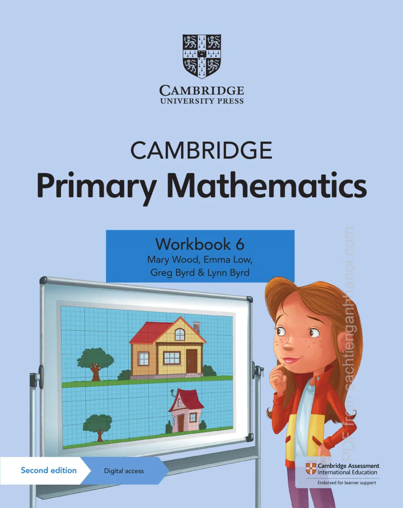
-
CAMBRIDGE
UNIVERSITY PRESS
CAMBRIDGE
Primoary Mathemodtics
Workbook ó
Mary Wood, Emma Low,
1
Greg Byrd & Lynn Byrd
Second edition
Digital access
Cambridge Assessment
Endorsed for learner support
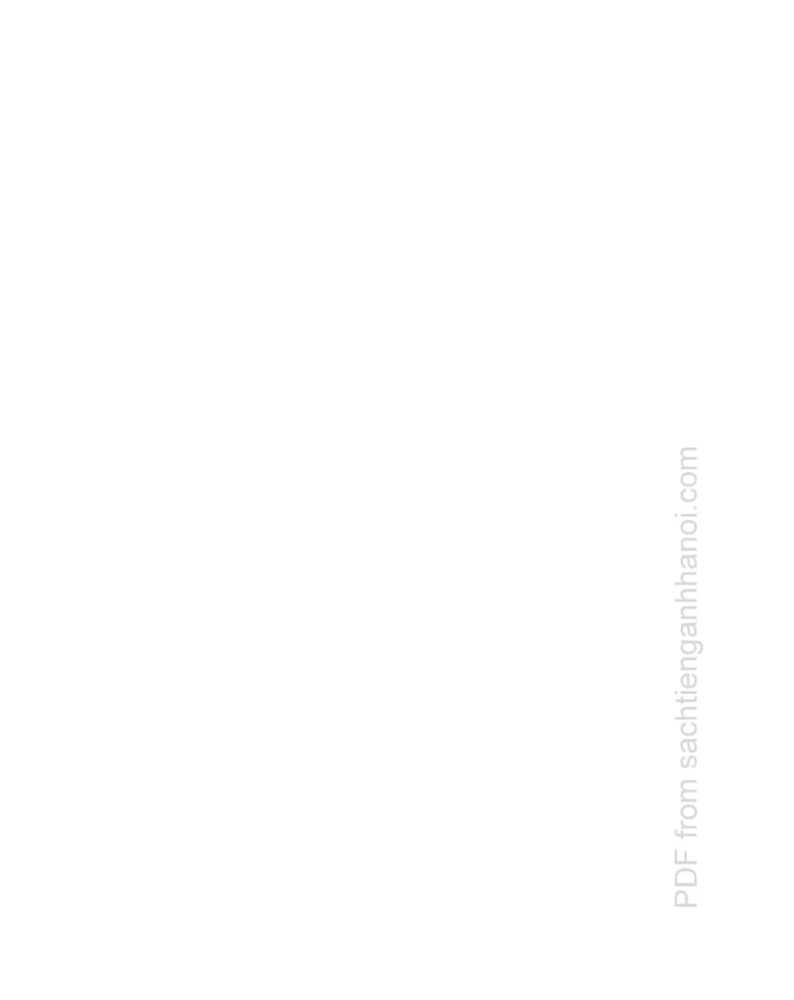
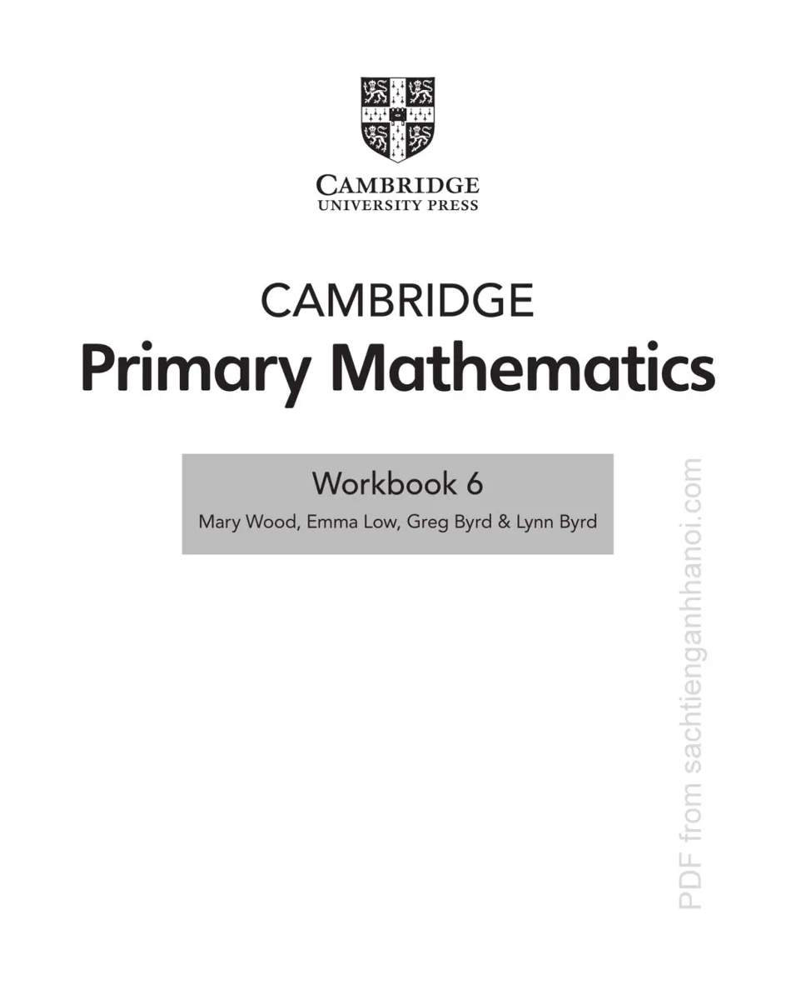
mm
- bu
CAMBRIDGE
UNIVERSITY PRESS
CAMBRIDGE
Primorv Mathemdtics
Workbook ó
Mary Wood, Emma Low, Greg Byrd & Lynn Byrd
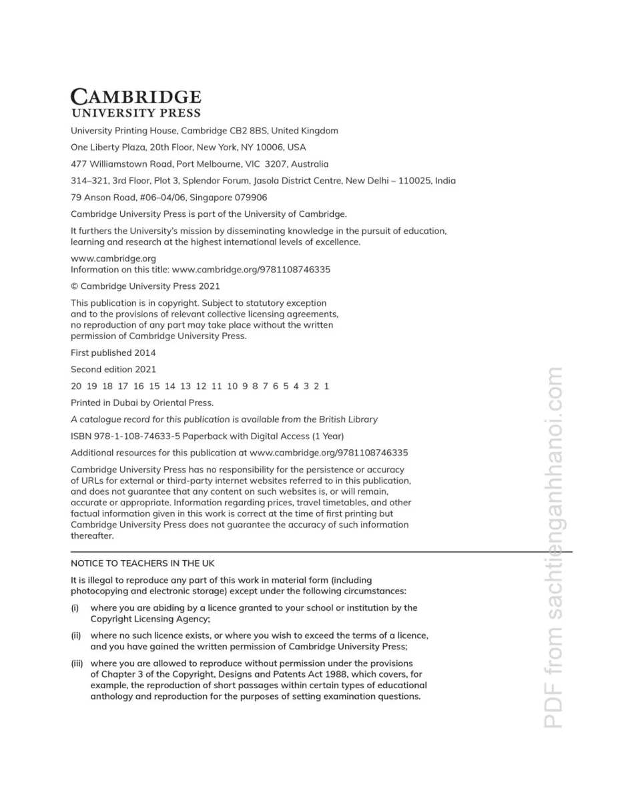
CAMBRIDGE
UNIVERSITY PRESS
University Printing House, Cambridge CB2 8BS, United Kingdom
One Liberty Plaza, 20th Floor, New York, NY 10006, USA
477 Wlilliamstown Road, Port Melbourne, VỊC 3207, Austrolid
314-321, 3rd Floor, Plot 3, Splendor Forum, Jasola District Centre, New Delhi - 110025, India
79 Anson Road, #06-04/06, Singapore 079906
Cambridge University Press is part of the University of Cambridge.
It furthers the University's mission by dissemindting knowledge in the pursuit of educotion,
learning and reseorch at the highest internationdl levels of
www.cambridge.org.
Informotion on this title: WWWw.cambridge.org/9781108746335
© Cambridge University Press 2021
This publication IS in copyright. Subject to statutory exception
|
œnd to the provisions of relevant collective licensing qg reements,
no reproduction of any part may take place without the written
permission of Cambridge University Press.
First published 2014
Second edition 2021
20 19 18 17 16 15 14 13 12 1110987654321
Printed in Duboi by Oriental Press.
A cdtdlogue record for this publication is gvdilable from the British Library
ISBN 978-1-108-74633-5 Paperbdck with Digitdl Access (1 Yeodr)
Additiondl resources for this publication at www.cambridge.org/9781108746335
Cambridge University Press has no responsibility for the persistence or ccurgcy
of URLs for externdl or third-porty internet websites referred toin this publicotion,
and does not guorantee that any content on sụuch websites ÌS, Or Will remdin,
or appropriate. Informotion regarding prices, travel timetobles, and other
factudl informotion given in this Work is correct dt the time of first printing
Cambridge University Press does not guorantee the accurdcy of such informotion
theredfter.
NOTICE TO TEACHERS IN THE UK
ltis iIlegal to reproduce any part of this Work in materidl form (including
photocopying and electronic storgge) except under the following circumstances:
() where you di gbiding by q licence granted to your school or institution by the
œ)
Copyright Licensing Agency;
(ii) where no such licence ©xists, Or where you wish to exceed the terms Of d licence,
and you have gơined the written permission of Cambridge University Press;
(ii) where you ore gllowed to reproduce without permission under the provisions
of Chapter 3 of the Copyright, Designs and Patents Act 1988, which COV€TS, for
example, the reproduction of short possages within certain types of educotiondl
anthology and reproduction †or the purposes of setting examinotion questions.
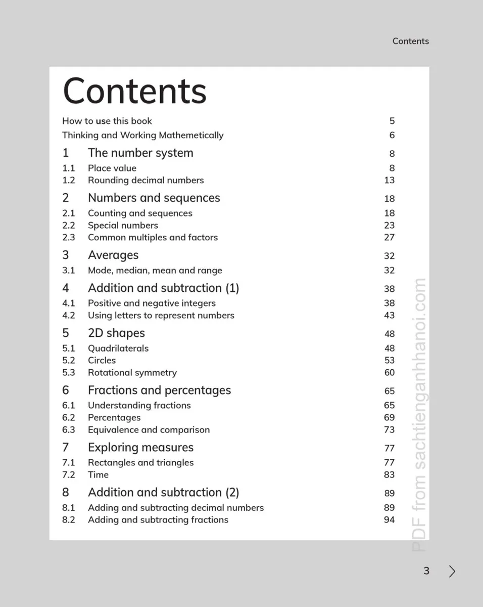
Contents
Contents
How to use this book
5
Thinking and Working Mathemeticolly
©
1
The number system
8
NV
Place vdlue
8
12
Rounding decimal numbers
1ã
2
Numbers and sequences
18
2.1 Counting and sequences
18
¿-.2
Specidl numbers
23
ĐẶC.
Common multiples and factors
27
3
Avergges
32
31
Mode, median, mean ơnd range
32
Á
Addition and subtrgction (1)
38
4.1
Positive and neggtive integers
38
4.2
Using letters to rebpresent numbers
43
5
2D shapes
48
5.1 Quad rilqaterdls
48
(
5.2 Circles
53 -C
5.3
Rotdtiondl symmetry
60 +
Q
Fractions and percentages
65
(
6.1
Understanding fractions
65
S)
6.2 Percentages
69
6.3
Equivdlence and compdrison
73
7
Exploring megsures
77
Z1
Rectangles and triangles
77
Œ
Œœ)
7.2
Time
833
8
Addition and subtrgction (2)
89
8.1
Adding ơnd subtrgcting decimal numbers
39
=
8.2
Adding ơnd subtrgcting fractions
94
LL_
ŒẦ
8
3
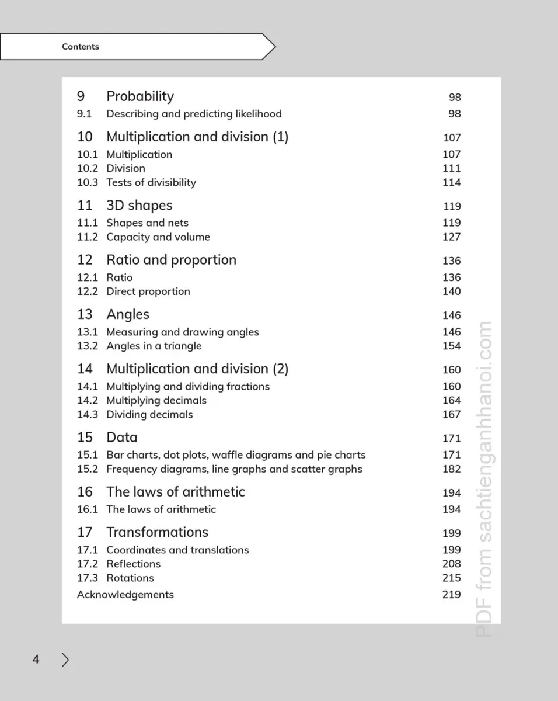
Contents
©
Probgbility
98
9.1
Describing and predicting likelihood
98
10 Multiplication and division (1)
107
10.1
Multiplication
107
10.2 Division
111
10.3 Tests of divisibility
114
11
3D shapes
119
11.1
Shapes and nets
119
11.2 Capocity and volume
127
12
Ratio and proportion
136
12.1
Rotio
136
12.2
Direct proportion
140
13 Angles
146
Megsuring and drawing angles
146 =
15:2
Andles in œ triangle
154
14 Multiplication and division (2)
160
14.1
Multiplying and dividing fractions
160
14.2
Multiplying decimadls
164
AU
14.3
Dividing decimols
167
15
Datd
171
154,
Bor chorts, dot plots, wdffle diagrams and pie chorts
171
15.2 Frequency diagrams, line graphs and scatter graphs
182
16
The laws of arithmetic
194
146.1 The laws of arithmetic
194
17
Transformotions
199
œ)
17.1
( Coordinotes and translations
199
17.2
Reflections
208
17.3
Rotqations
215
Acknowledgements
219
4
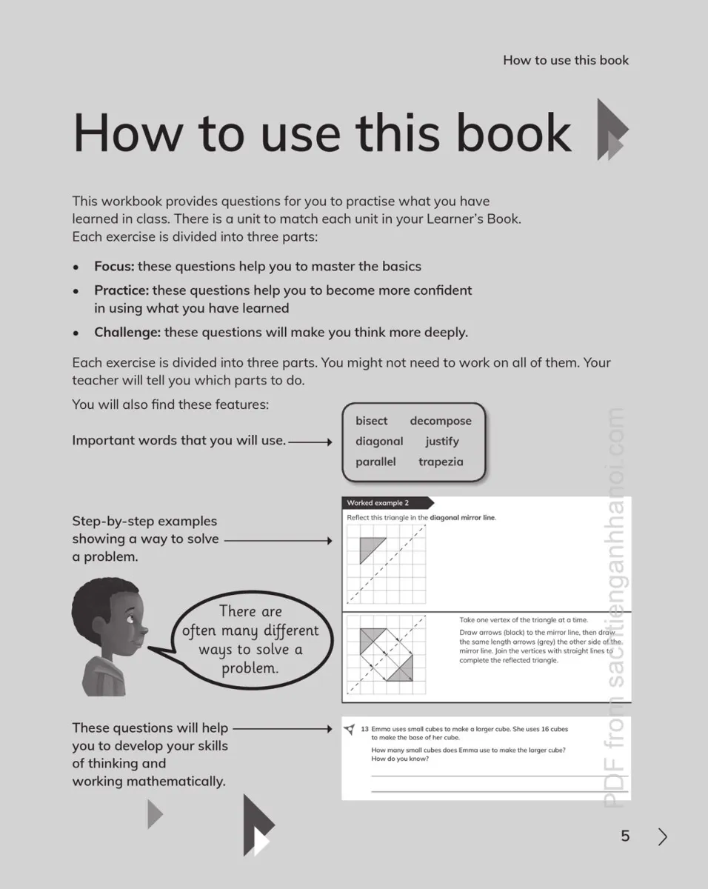
How to use this book
How to use this book
Thịs workbook provides questions for you to prdctise whdat you have
learned In class. There is Q unit to motch
unit in your Ledrner's Book.
Each exercise is divided Into three ports:
_
Focus: these questions help you to master the basics
Practice: these questions help you to become more confident
In using
you hove learned
e : Challenge: these questions wlll make you think more deeply.
Each exercise is divided Into three ports. You might not need to work on dll of them. Your
tegcher will tell you which ports to do.
You WIll also find these feqtures:
bisect
decompose
lmportant words that you will use. -
diagondl
justify
C
parollel
trapezid
S
Worked example 2
Reflect this triangle in the diagondl mirror line.
(
Step-by-step examples
C
showing q woy to solve
.C
g problem.
C
49)
)
There
often manu difƒerent
Take one vertex of the triangle qt q time.
Draw qrrows (black) to the mirror line, then draw
WqUS to solve a
the same length
(grey) the other side ofthe
problem.
complete the reflected triangle.
irror line. Join the vertices with straight lines to
(
Œœ)
These questions will help
13 Emma
small cubes to moke a larger cube. She uses 16 cubes
©
you to develop your skills
How
smdll cubes does Emma use to mqke the larger cube?
base of her cube
of thinking and:
How do you know?
| I
working mathematicdlly.
5b
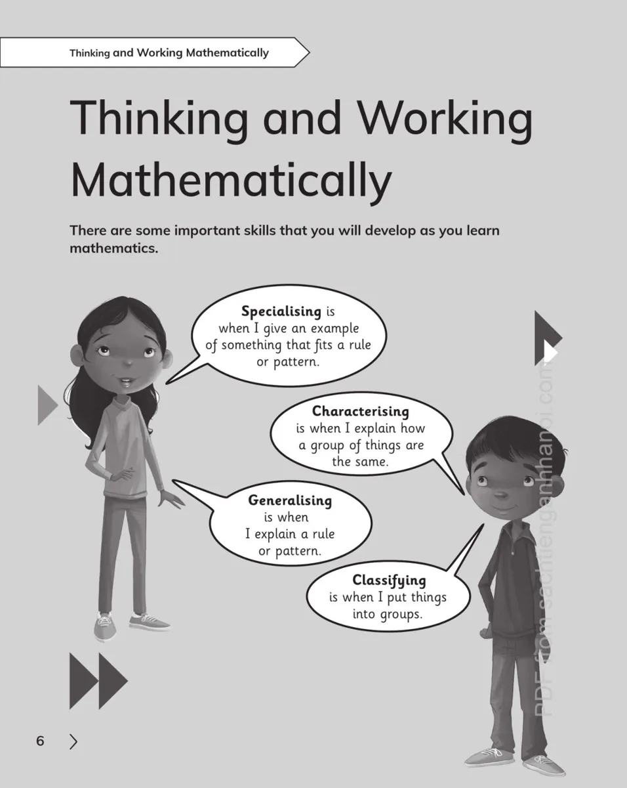
Thinking and Working Mathemoticdlly
Thinking and Working
Mathemeoticdolly
There are some Important skills that you will develop as you learn
mathemodtics.
Specialising is
when Ï give an example'
oƒ something that ƒits a rule
or pattern.
Choracterising
is when I explain how
a group oƒ things gre
the same.
Ge ne ralising
(s when
Ï explain a rule
or pdttern.
Classiƒuing
is when Ï put things
Into groups.
G
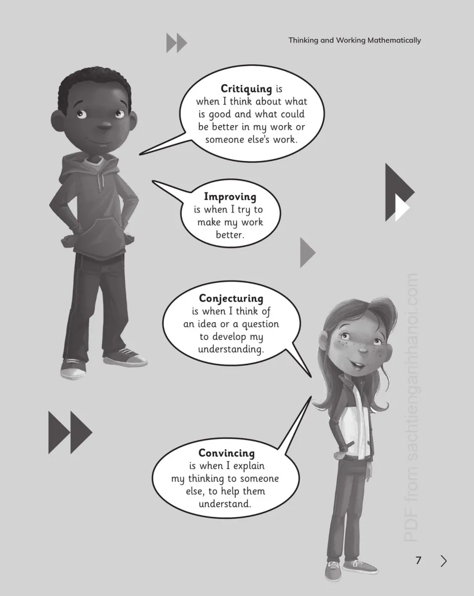
Thinking and Working Mathemoticolly
Critiquing is
when Ï thinh about what
Is good and what could
be better in mu work or
someone elses work.
when Ï trụ to
Improving
lx
make mu work
better.
Conjecturing
IS when | think oƒ
an ided or q question
to develop mụ
unde rstanding, .
Convincing
is when Ï explain
t2
mu thinking to someone
else, to help them
understand.
“¬
D
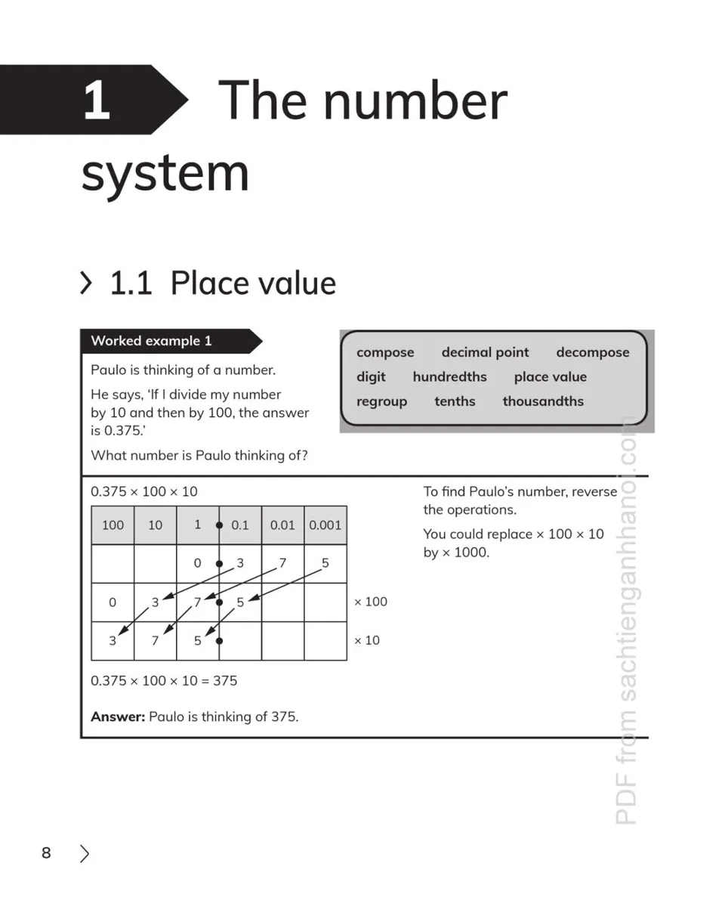
The number
system
› 1.1 Ploce vdlue
Worked example 1
compose
decimdl point
decompose
Paulo is thinking of a number.
digit
hundredths
place value
He soys, 'lf | divide my number
tenths
regroup
thousandths
by 10 and then by 100, the answer
¡s 0.375.
What numbser IS Pqaulo thinking of?
C}
0.375 x 100 x 10
To find Paulo's number, reverse
the operations.
100
10
1
0.1
0.01
| 0.001
(
You could replace x 100 x 10
by x 1000.
0
3
5
0
5
x 100
7
b
x10
0.375x 100 x 10=375
Answer: Pqulo ¡is thinking of 375.
=
8
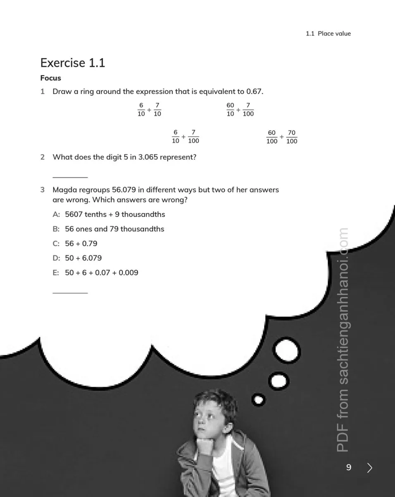
1.1 Place value
ExercIse 1.1
Focus
1
Ì Draw q ring
the expression that ¡is equivdlent to 0.67.
10 + 10
6.7
60 7.
10
100
6
7
60
70
10 ˆ 100
100 - _ 100
2
What does the digit 5 in 3.065 represent?
3
Magda regroups 56.079 In different WOyS but two of her answers
re wrong. Which answers
wrong?
A: BG07 tenths + 9 thousandths
B: ! 5G ones ơnd 79 thousandths
C: 5G6+0.79
œ
D: 50 + G.079
E:
50+G6+0.07+0.009
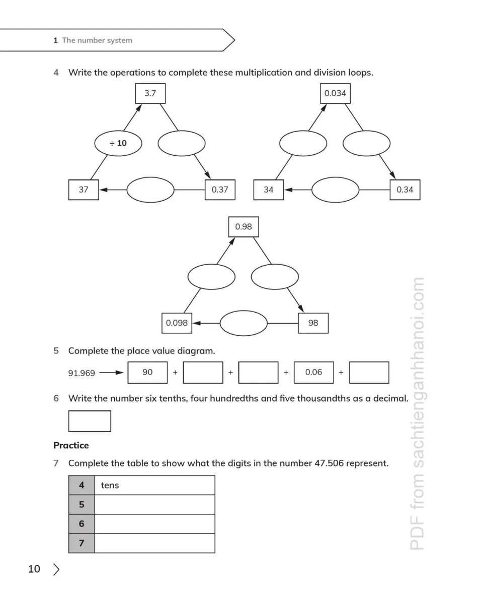
1 The number system
4_
Write the operdtions to complete these multiplication and division loops.
3./
0.034
+ 10
37
0.37
34
0.34
0.98
0.098
98
Complete the place vdlue diagram.
91.969
90
0.06
6
Write the number six tenths, four hundredths œnd five thousandths gs a decimal.
7
Complete the table to show what the digits in the number 47.506 represent.
œ)
4
tens
5
6
T¿
10
2
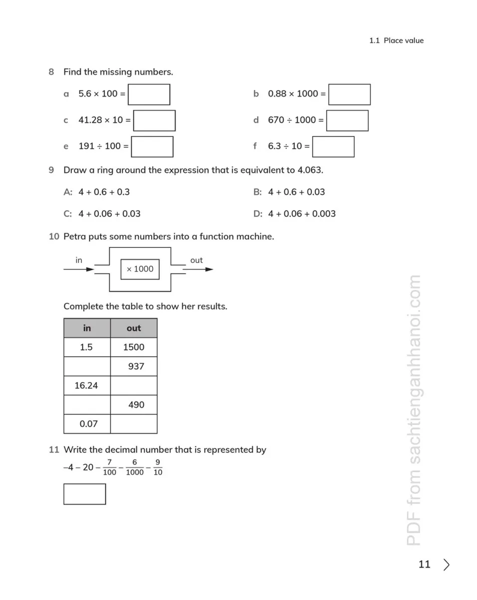
1.1 Place value
8
Find the missing numbers.
a
5,6 x 100 =
b
0.88 x 1000 =
C
41.28 x 10 =|
d
G70 + 1000 =
e
191 + 100 =
f
6.3 + 10=
9
Draw d ring around the expression that ¡is equivdlent to 4.063.
A: 4+0.6+0.3
B: 4+0.6+0.03
C: 4+ 0.06 + 0.03
D: 4+0.06 + 0.003
10 Petra puts some numbers into da function machine.
In
out
x 1000
-=-
Complete the table to show her results.
in
out
4.5
1500
837
16.24
490
0.07
11 Write the decimadl number that is represented by
¬4 — 20-
T-
6
3
100.
1000
10
a
11 ọ
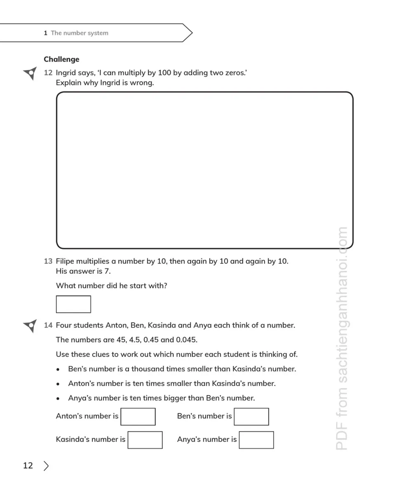
1 The number system
Challenge
12 Ingrid says, “1 can multiply by 100 by adding two zeros.'
Explain why lngrid Is Wrong.
=
13 Filipe multiplies a number by 10, then qgdin by 10 and qgdin by 10.
His answer Is Z7.
What number did he start with?
14 Four students Anton, Ben, Kosinda and Anyda eqch think of a number.
The numbers œre 45, 4.5, 0.45 and 0.045.
Use these clues to work out which number eqch student is thinking of.
Bens number ¡s a thousand times smdller than Kasindd”s number.
Anton”s number ¡is ten times smoller than
number.
se.
Anyds number is ten times bigger than Ben's number.
Anton”s number is|
Bens number is
Kqasindd's number Is
Anyd”s number Is
12 ›
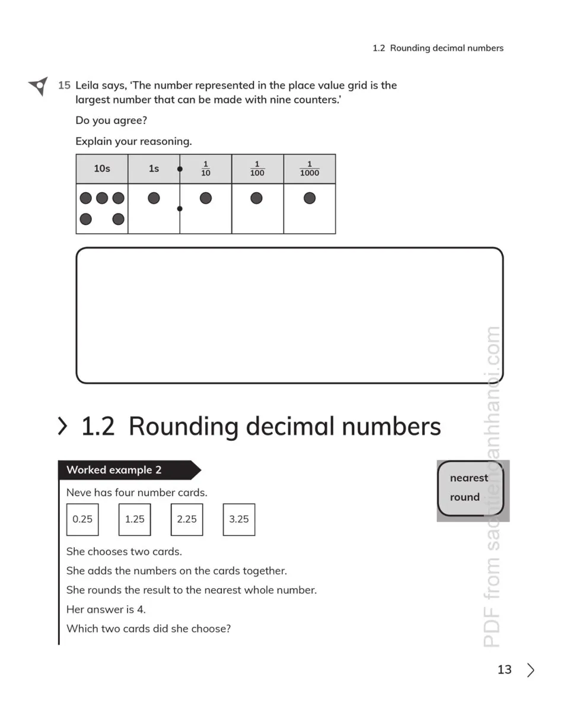
1.2 Rounding decimal numbers
15 Leila says, “The number represented in the place vdlue grid is the
largest number that can be mgde with nine counters.'
Do you ggree?
Explain your regsonind.
10s
1s
16
TT
1000
1
=
› 1.2 Rounding decimadl numbers
C
——
Worked example 2
nedrest
Neve has four number cords.
round
0.25
1,5
2.25
3.25
She chooses two cdrds.
She adds the numbers on the cards together.
She rounds the result to the neorest whole number.
Her answer Is 4.
le
Which two cords did she choose?
A_.
13
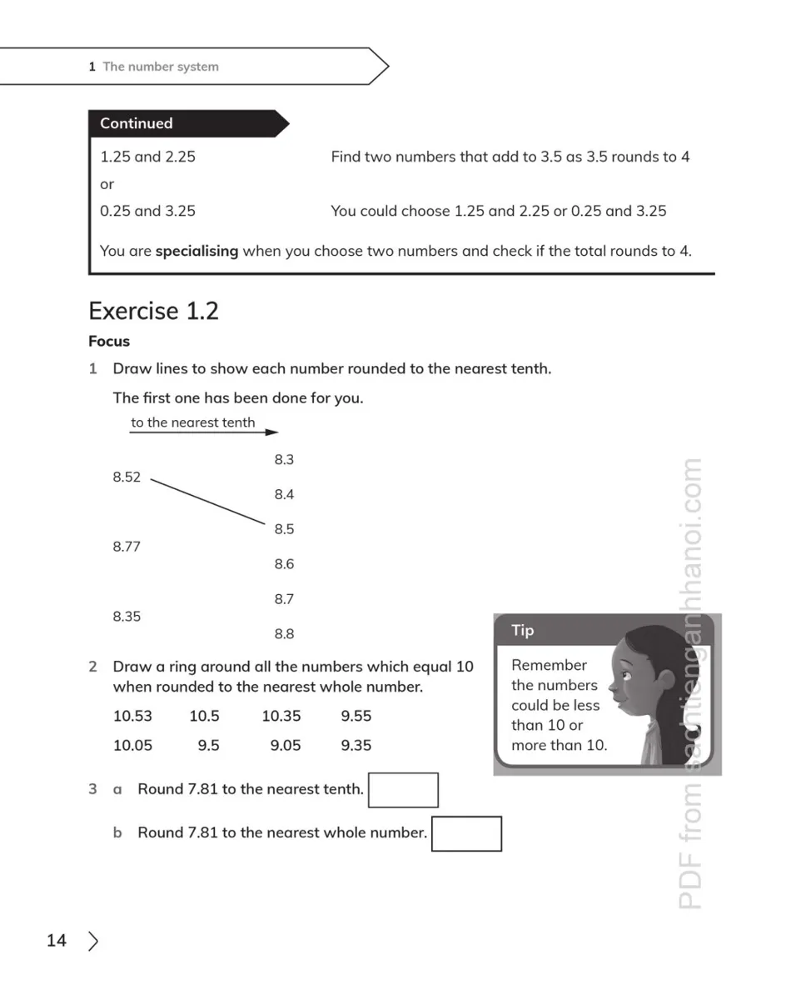
1 The number system
Continued
2.25
Find two numbers that
to 3.5 gas 3.B rounds to 4
OFr
0.25 and 3.25
You could choose 1.25 and 2.25 or 0.25 and 3.25
You dre specidlising when you choose two numbers and check If the totdl rounds to 4.
Exercise 1.2
Focus
Draw lines to show eqch number rounded to the neorest tenth.
The first one has been done for you.
to the nedrest tenth
8.3
_ “
8.52
8.4
6.5
8.77
8.6
8./
8.35
8.8
Tip
—_—
2
Draw dq ring around dll the numbers which equdl 10
Remember
when rounded to the neorest whole number.
the numbers
could be less
10.53
10.5
10.35
9.55
than 10 or
10.05
9.5
9.05
9.535
more thơn 10.
3
a
Round 7.81 to the nedrest tenth.
b
Round 7.81 to the nearest whole number.
A
14 »
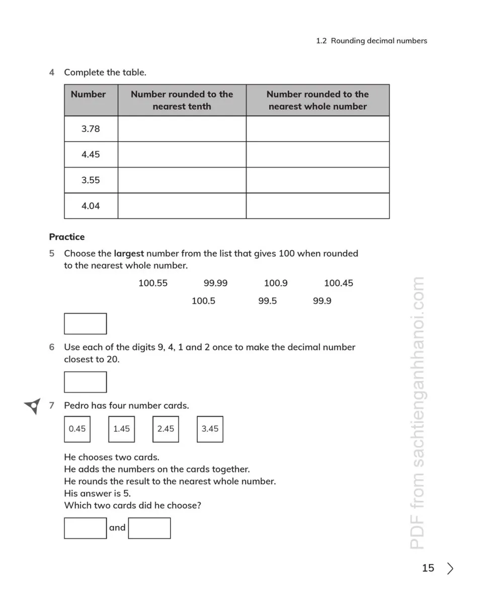
1.2 Rounding decimal numbers
4 Complete the table.
Number
Number rounded to the
Number rounded to the
nedrest tenth
nedrest whole number
3.78
4.45
3.59
4.04
Practice
5
Choose the largest number from the list that gives 100 when rounded
to the neorest whole number.
100.55
89,88
100.9
100.45
100.5
99.5
99.8
6
Use eqch of the digits 9, 4, 1 and 2 once to mdke the decimal number
closest to 20.
7
Pedro hos four number cards.
0.45
1.45
2.45
3.45
He chooses two cards.
He adds the numbers on the cards together.
He rounds the result to the nearest whole number.
His answer Is B5.
Which two cords did he choose?
land|
A
15 ọ
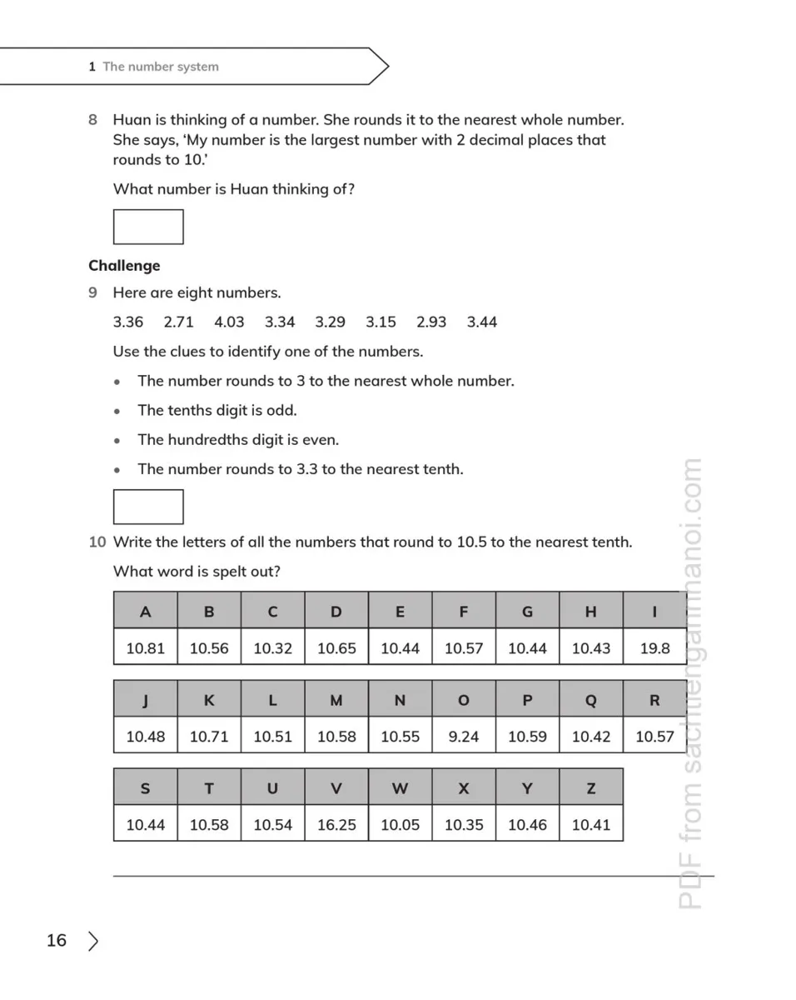
1 The number system
8
Huan ¡s thinking of a number. She rounds It to the
whole number.
She soys, 'My number is the largest number with 2 decimodl places that
rounds to 10"
What number ¡is Huan thinking of?
9
Here are eight numbers.
3.36
2.2 1,
4.03
3.34
3.15
253
3.44
Use the clues to identify one of the numbers.
e
The number rounds to 3 to the nedrest whole number.
The tenths digit is odd.
se
The hundredths digit is even.
The number rounds to 3.3 to the nedrest tenth.
10 Write the letters of all the numbers thơt round to 10.5 to the neorest tenth.
What word is spelt out?
Ầ
B
C
D
E
F
G
H
|
10.81
10.56
10.32
10.65
10.44
LŨ.57
10.44
10.43
19.8 2)
J
K
L
M
N
O
P
Q
R
10.48
10.71
10.51
10.58
10.55
9.24
10.59
10.42
10.57
œ)
°
T
U
V
W
Y
z
C
10.44
10.58
10.54
16.25
10.05
10.35
10.46
10.41
LL.
0.
16 `
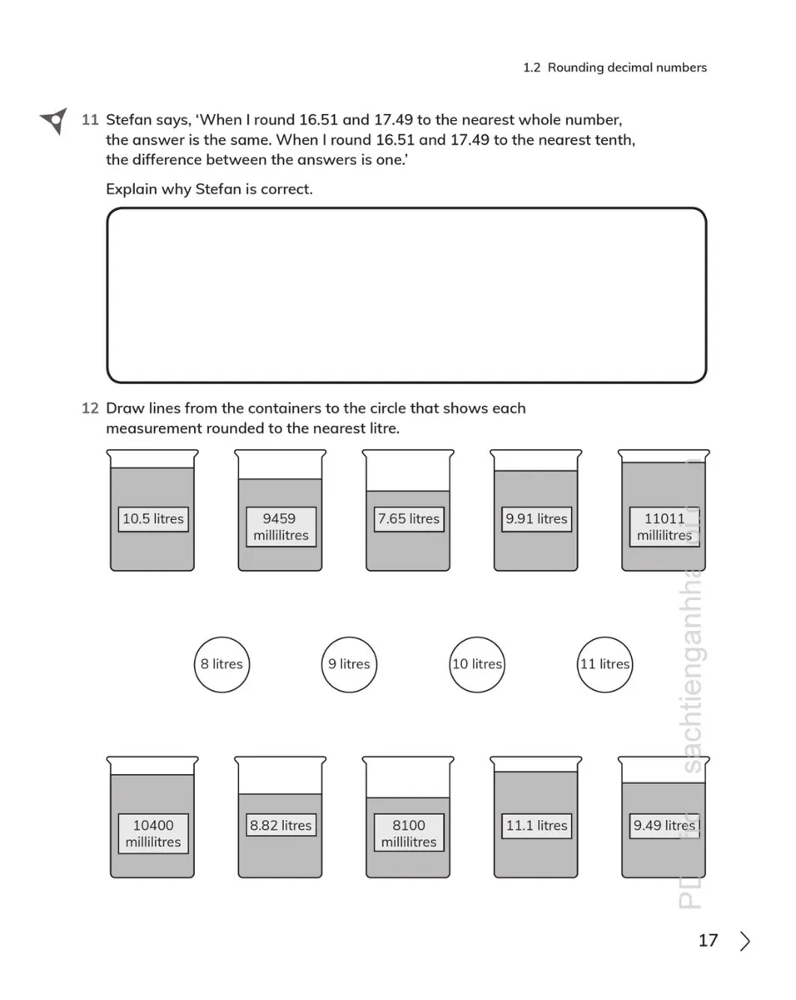
1.2 Rounding decimal numbers
11 Stefan soays, ˆWhen l round 16.51 and 17.49 to the negrest whole number,
the answer Is the same. When | round 16.51 and 17.49 to the nearest tenth,
the difference between the
is one.
Explain why Stefon Is correct.
12 Draw lines from the contdiners to the circle that shows eqch
megsurement rounded to the neorest litre.
| 10.5 litres |
3459
|765 litres |
9.91 litres |
11011
millilitres
millilitres
— —
8 litres
9 litres |
10 litres
11 litres]
0\
10400
8.82 litres
8100
11.1 litres|
|9.49 litres |
millilitres
| millilitres
0
17
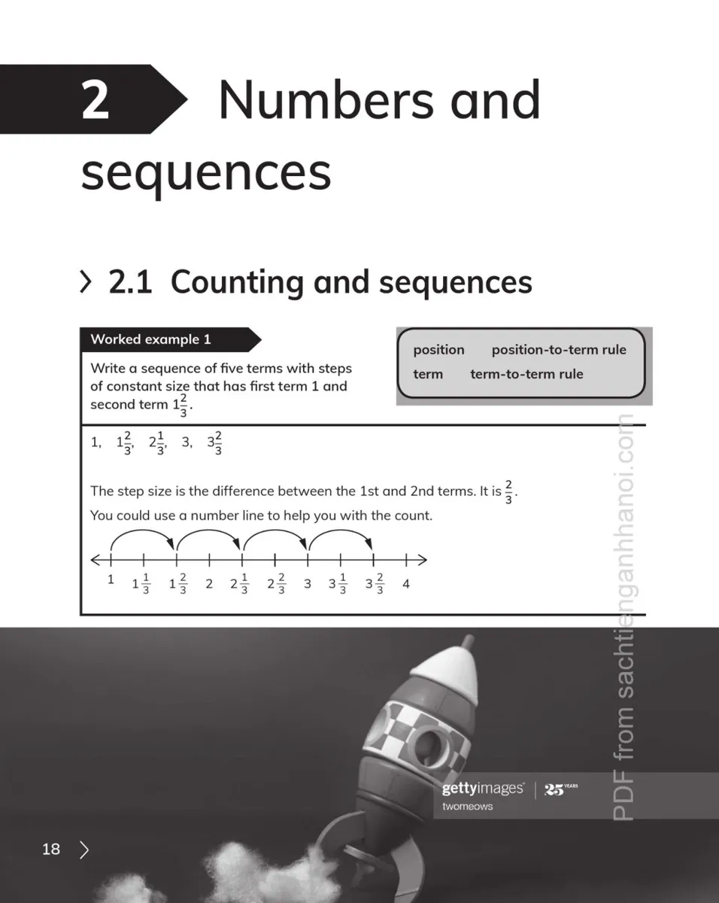
Numbbers and
SeqQuences
›» 2.1 Counting and sequences
Worked example 1
position
position-to-term rule
Write a sequence of five terms with steps
term
term-to-term rule
of constant Size that hos first term 1 and
second term lễ.
1, lễ, 25, 3 3
1
4
3
_
2
4
—t—
The step sIze Is the difference between the 1st and 2nd terms. lt is s:
You could use a number line to help you with the count.
2$ 25
3
35
3.
gettyimages
S5”
18
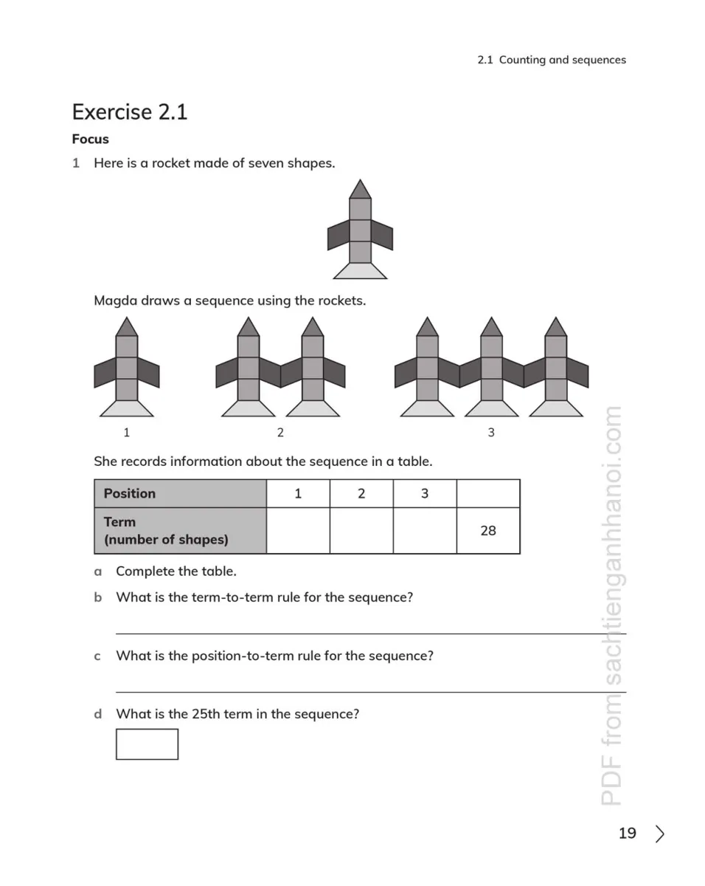
2.1 Counting and sequences
ExercIse 2.1
Focus
Here is a rocket
of seven shgpes.
Magda draws d sequence using the rockets.
1
2
3
She records Information qbout the sequence in ad table.
Position
1
2
3
Term
(number of shapes)
28
a
Complete the table.
b
What is the term-to-term rule for the sequence?
What is the position-to-term rule for the sequence?
——
d_
What is the 25th term in the sequence?
L_ =
8
19
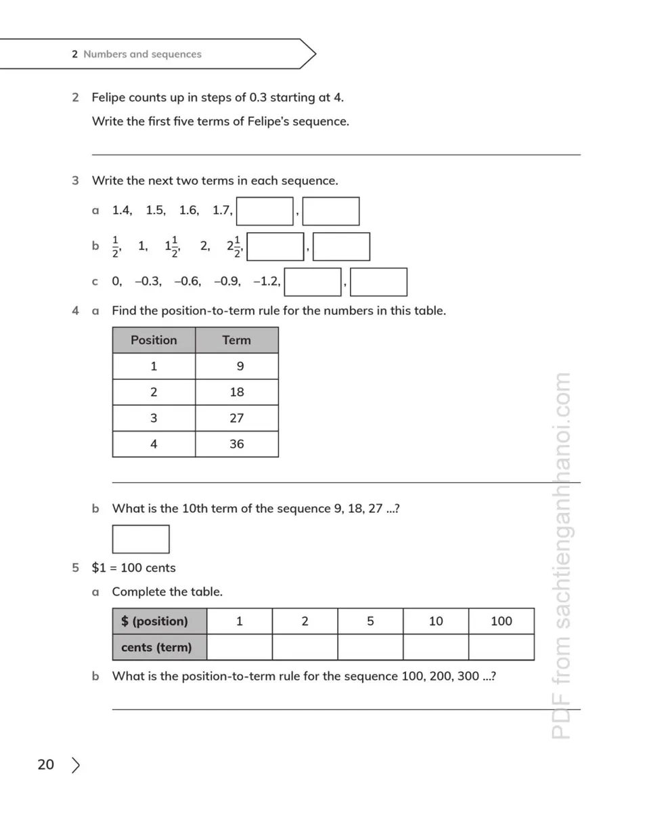
2 Numbers and sequences
2
Felipe counts up in steps of 0.3 starting at 4.
Write the first five terms of Felipe's sequence.
3
Write the next two terms in eqch sequence.
a
1.4,
1,5,
1.6,
17,
b
1
1,
^,
2
2!
C
0,
-0.3,
-0.6,
-0.9,
-1.2,
4
a
Find the position-to-term rule for the numbers in this table.
Position
Term
1
9
2
18
E
4
36
b
is the 10th term of the sequence 9, 18, 27 ...?
5 $1 = 100 cents
®
Complete the table.
$ (position)
1
2
5
10
100
cents (term)
b
What is the position-to-term rule for the sequence 100, 200, 300...?
—- —
—-—
D
20 »
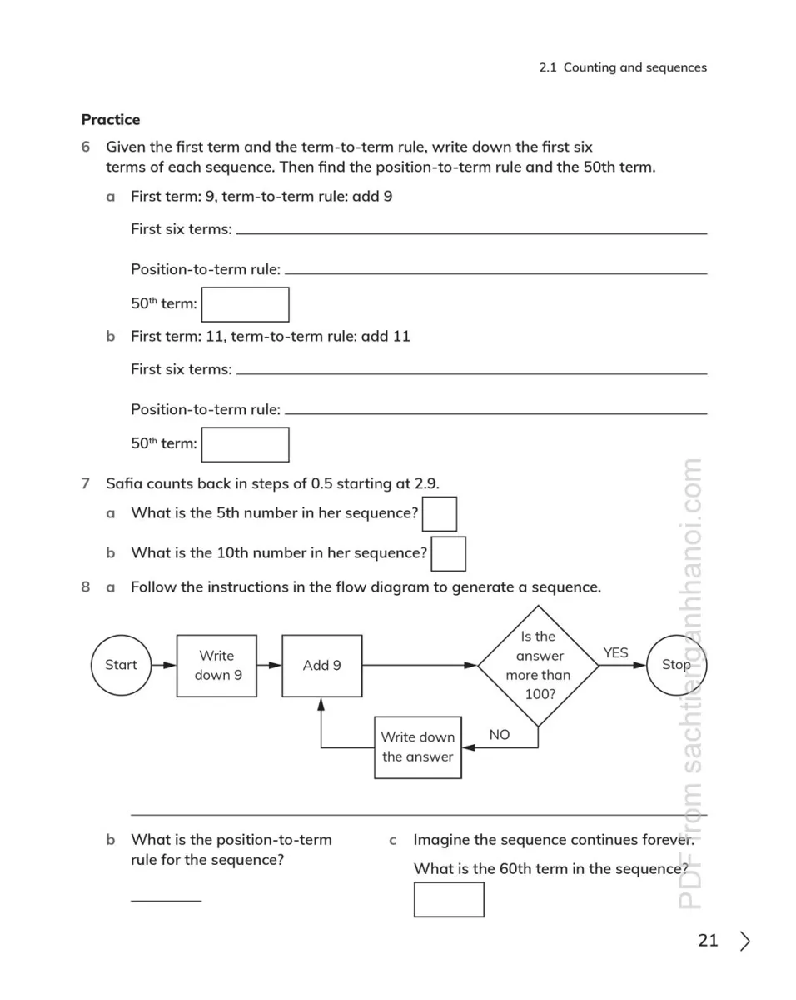
2.1 Counting and sequences
Practice
6
Given the first term and the term-to-term rule, write down the first six
terms of eqch sequence. Then find the position-to-term rule and the 50th term.
a
First term: 9, term-to-term rule: dd 9
First six terms:.
Position-to-term rule:
50th term: |
b
First term: 11, term-to-term rule: add 11
First six terms:.
Position-to-term rule:
50h term: |
7
Sdfiga counts back in stebs of 0.5 starting at 2.9.
a
What ÍS the 5th number in her sequence?
b
What is the 10th number In her sequence?
8
a
Follow the instructions in the †low diagram to generdte a sequence.
C
the
MWrite
YES
Stort
Add 9
down 9
more than
Stop
100?
œ
Write down
NO
©
the answer
(
Œœ)
=
b
What is the position-to-term
C
lmagine the sequence continues forever.
rule for the sequence?
What is the 60th term In the sequence?
A
21 ›
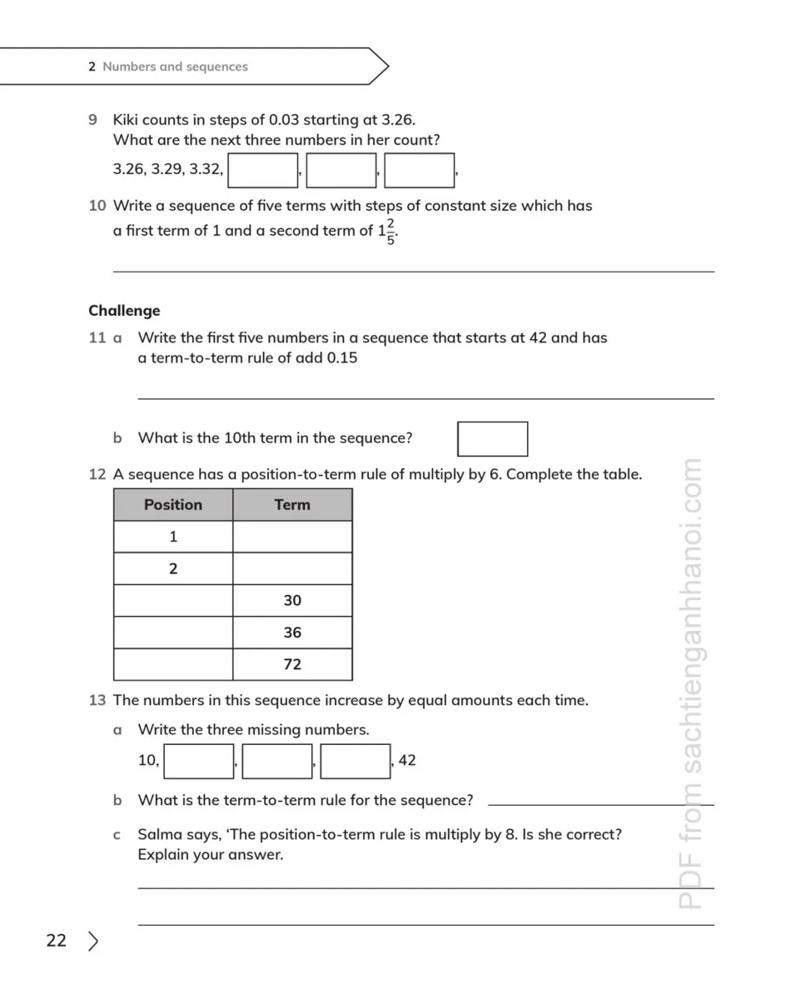
2 Numbers and sequences
9
Kiki counts In steps of 0.03 starting at 3.26.
What
the next three numbers In her count?
3.6, 3.29, 3.32,
10 Write Q sequence of five terms with steps of constant size which has
Challenge
1l1iq
Write the first five numbers in a sequence that starts at 42 and has
Q term-to-term rule of add 0.15
b
What is the 10th term In the sequence?
12 A sequence hgs d position-to-term rule of multiply by 6. Complete the table.
Position
Term
1
2
30
36
72
13 The numbers In this sequence Incregse by equdl amounts eqach time.
a
Write the three missing numbers.
10,
42
b
Whoaot is the term-to-term rule for the sequence?
———
C
Sdlma soys, “The position-to-term rule is multiply by 8. ls she correct?
Expldin your answer.
L_
ïn
D
22 »
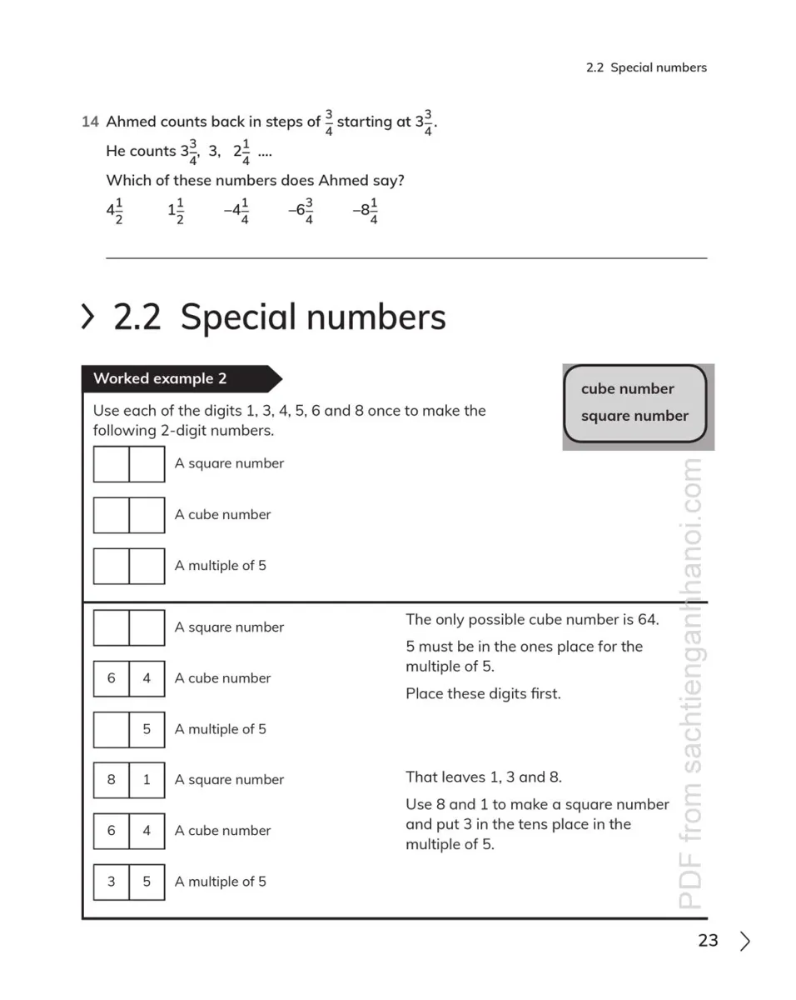
2.2 Special numbers
14 Ahmed
steps of starting œt
4
He counts
3, 2 .
4
Which of these numbers does Ahmed say?
4
-63
-a1
› 2.2 Specidl numbers
Worked example 2
cube number
Use eqach of the digits 1, 3, 4, 5, 6 and 8 once to mdke the
squdre number
following 2-digit numbers.
A squdre number
A cube number
———
A multiple of 5
A squdre number
The only possIble cube number Is 64.
=
5 must be in the ones place for the
multiple of 5.
O
4
A cube number
Place these digits first.
5
A multiple of 5
8
1
A squdre number
Thot leaves 1, 3 and 8.
Use 8 ơnd 1 to moke d squdre number
O
4
A cube number
and put 3 in the tens place in the
multiple of 5.
L_
3
5
A multiple of 5
A_.
23 »
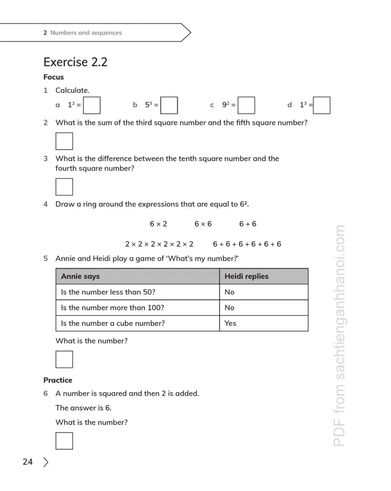
2 Numbers and sequences
ExercIse 2.2
Focus
1
Calculate.
a 12=|
b
Bề:
C
92
d
1°
2
What is the sum of the third squodre number œnd the fifth square number?
5
What ¡is the difference between the tenth squodre number ơnd the
fourth squdre number?
4
Draw dq ring around the expressions that are equdl to 63.
6x2
6x6
6+6
2x2x2x2x2x2
6+6+6G6+G+G+G6
5
Amnle and Heidi play a game of “Whgt's my number?”
Annie says
Heidi replies
ls the number less than 50?
No
ls the number more than 100?
No
ls the number Q cube number?
Yes
Whot ¡is the number?
Practice
©
A numbser is squored and then 2 ¡is added.
The answer Is 6.
Whot ¡s the number?
24 ọ
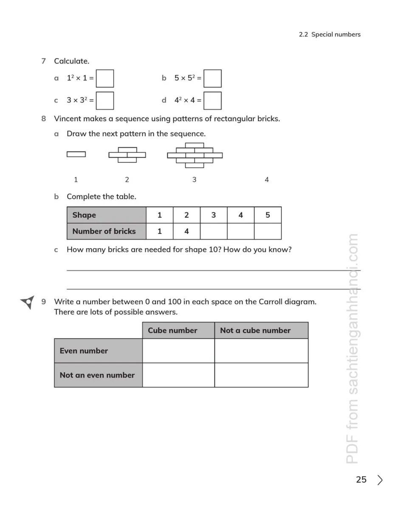
2.2 Special numbers
7
Calculate.
a
12x1=
b
C
3x3? =|
d
Ä3 x*ĂÄ=
8
Vincent makes ga sequence using patterns of rectangular bricks.
a
Draw the next pattern in the sequence.
L
1
2
3
4
b Complete the table.
Shape
1
2
3
4
5
Numbber of bricks
1
4
— —==—....
How many bricks are needed for shape 10? How do you know?
9
Write a number between 0 and 100 in eqach spdce on the Carroll diagram.
There are lots of possible answers.
Cube number
Not a cube number
Even number
Not an even number
A
25 ›
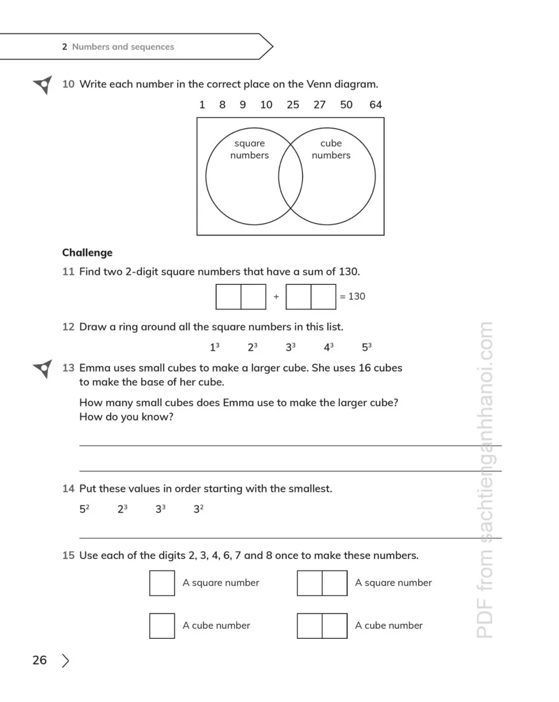
2 Numbers and sequences
10 Write each number in the correct place on the Venn diagram.
HỆ
8
©
10
P.2
27
50
G4
Squdre
cube
numbers
numbers
Challenge
11 Find two 2-digit squodre numbers that hgave l6) sum of 130.
=130
12 Draw dq ring around dll the squodre numbers in this list.
1°
23
33
42
B3
13 Emma uses small cubes to make dq larger cube. She uses 16 cubes
to moke the base of her cube.
How many smadll cubes does Emma use to mdke the larger cube?
How do you know?
14 Put these vdlues in order starting with the smdllest.
B2
23
33
32
15 Use eqch of the digits 2, 3, 4, 6, 7 and 8 once to make these numbers.
A squdre number
A squdre number
A cube number
A cube number
26 ›
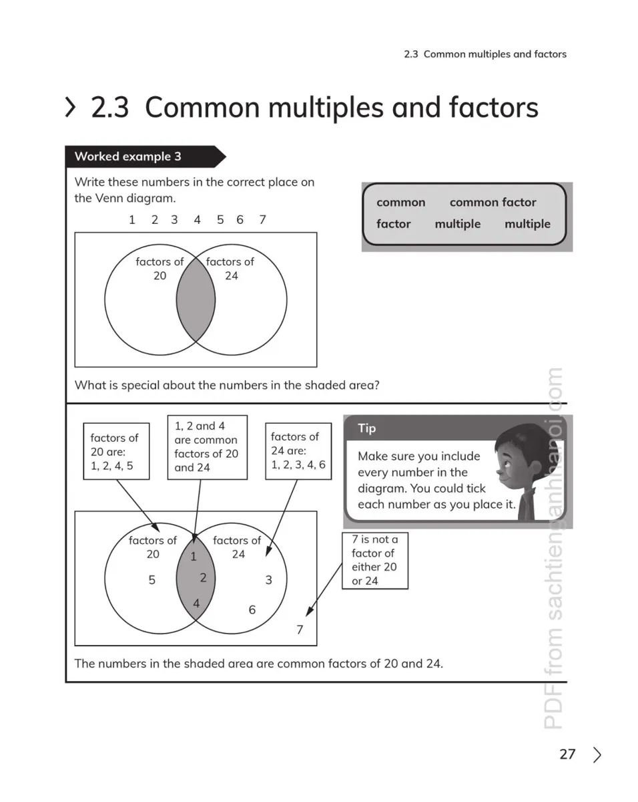
2.3 Common multiples and factors
›> 2.3 Common multiples and factors
Worked example 3
Write these numbers In the correct place on
the Venn diagram.
common
common factor
1
¿3
4
5
G
7ÿ
factor
multiple
multiple
†actors of
of
20
24
What is specidl aqbout the numbers in the shaded greg?
œ
1,2 and 4
factors of
fq CtorS of
Tip
common
2Ô œre:
†actors of 20
24 dre:
1,2,4,5
1; 2, 3, 4,
Make sure you include
œnd 24
every number in the
diagram. You could tick
eqch number as you place ít.
†actors of
f†actors of`
ZIsnotd
20
1
24
†actor of
either 20
5
2
3
or 24
4
C)
7
—_—
The numbers in the shaded
are common factors of 20 and 24.
—
le
8
27
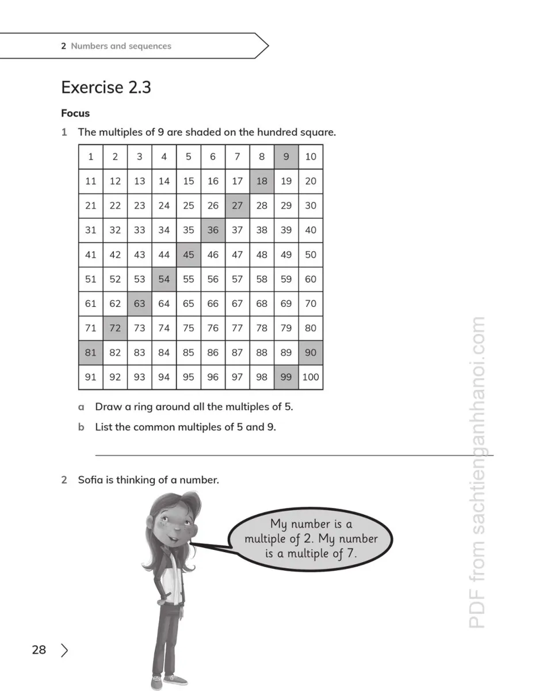
2 Numbers and sequences
ExercIse 2.3
Focus
1
The multiples of 9 are shaded on the hundred
1
4
5
O
7
8
O
10
11
12
13
14
15
16
17
18
19
20
21
22
23
24
25
26
7254
28
29
30
31
32
33
34
35
36
38
39
40
41
42
43
44
45
46
47
48
49
50
51
B52
B3
54
55
56
57
58
59
60
G61
62
63
G4
65
6G
G7
68
69
70
Z1
72
73
74
Z5
Z6
77
78
9
80
81
82
83
34
S5
87
38
39
90
91
2
83
94
35
96
98
39
100
a
Draw dq ring ground dll the multiples of 5.
b
List the common multiples of 5 and 9.
2
Sofa is thinking of a number.
Mụ number LS
œ)
multiple oƒ 2 Mụ number
q multiple oƒ
28
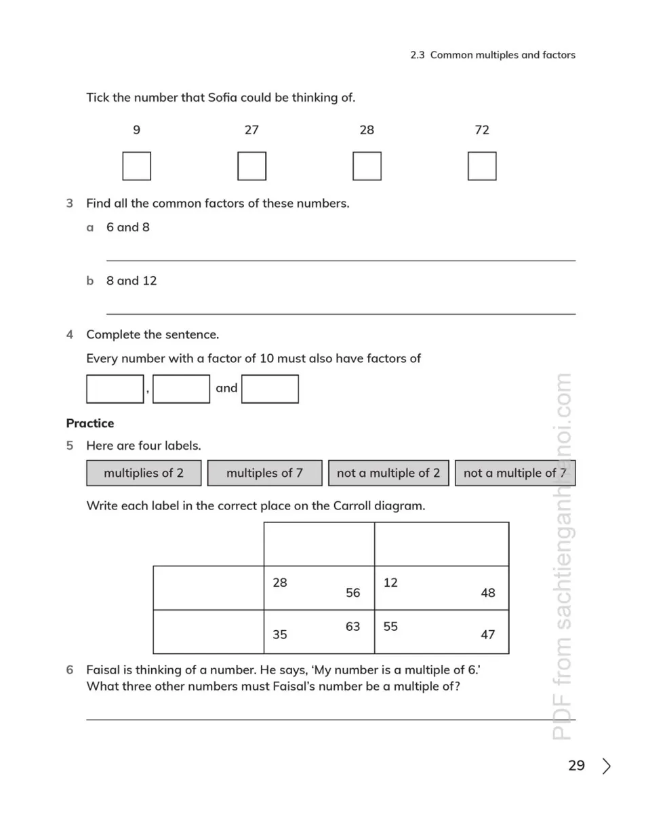
2.3 Common multiples and factors
Tick the number that Sofia could be thinking of.
O
27
28
72
3
Find all the common fgctors of these numbers.
a
8 8
b
12
4 Complete the sentence.
Every number with a factor of 10 must glso have factors of
and.
Practice
—_— ¬
5
Here are four labels.
multiplies of 2
multiples of 7
not a multiple of 2
not a multiple of 7
===
Write eqch label In the correct place on the Carroll diagram.
28
12
56
48
63
35
55
47
6
Fdisdl Is thinking of a number. He soys, 'My number Is a multiple of 6“
What three other numbers must
number be a multiple of?
¬———-
A
29 »
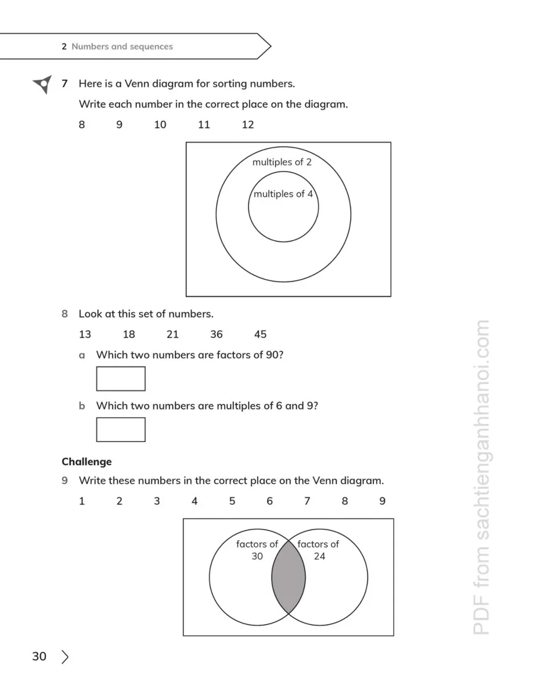
2 Numbers and sequences
Here ¡is a Venn diagram for sorting numbers.
\Write eqch number in the correct plqace on the diagram.
8
9
10
L1.
12
of 2
/multiples of 4`
8
Look œt this set of numbers.
13
18
21
36
45
a
Which two numbers
fqctors of 90?
b
Which two numbers are multiples of 6 and 9?
Challenge
9
Write these numbers In the correct place on the Venn diagram.
1
¿
3
4
5
lo)
7
8
©
factors of.
of
30
24
30 »
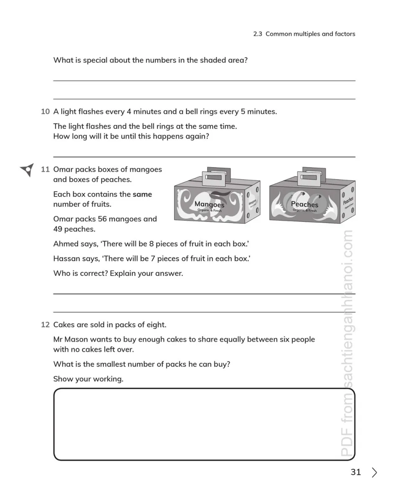
2.3 Common multiples and factors
What is specidal about the numbers in the shaded area?
10 A light flashes every 4 minutes and da bell rings every 5 minutes.
The light flashes and the bell rings at the same time.
How long will it be until this happens aggin?
11 Omar packs boxes of mangoes
and boxes of pegches.
Each box contdins the same
number of fruits.
MangoeS
Omar packs 56 mangoes and
49 pegches.
——
Ahmed soys, “There will be 8 pieces of fruit in eqch box.
Hassơan soys, “There will be 7 pieces of fruit in each box.
Who ¡s correct? Expldin your answer.
——
—A
12 Cakes are sold in packs of eight.
Mr Mason wœnts to buy enough cokes to share equdlly between six people
with no cakes left over.
What ¡is the smallest number of packs he can buy?
Show your workindg.
œ
L_
a
31 ›
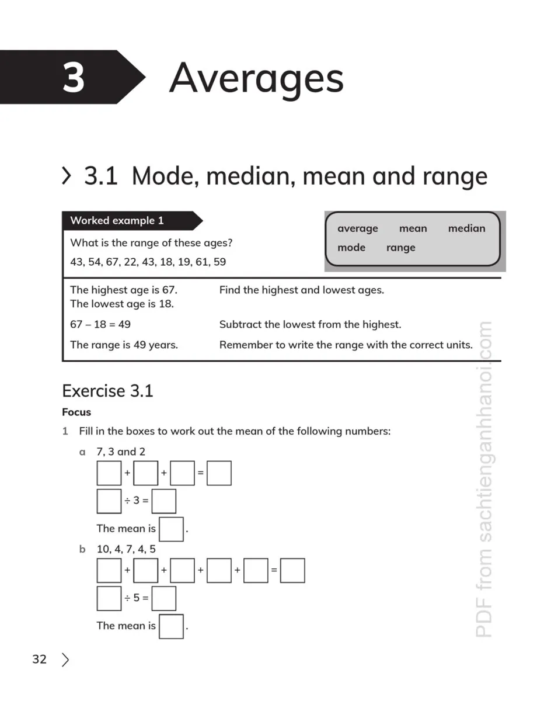
Avergges
›> 3.1 Mode, mediiœn, meœn and range
Worked example 1
qvergge
meœn
median
What is the range of these ages?
mode
range
43, 54, G7, 22, 43, 18, 19, 61, 59
The highest age Is 67.
Find the highest and lowest ages.
The lowest dge Is 18.
G7-18=49
Subtract the lowest from the highest.
le
The range Is 49 yeors.
Remember to write the range with the correct units.
C)
ExercIse 3.1
Focus
1
Fillin the boxes to work out the mean of the following numbers:
œ
7,30and2
3
The meơn is |
b
10,4,7,4,5
+B=
The meơn Is |
32
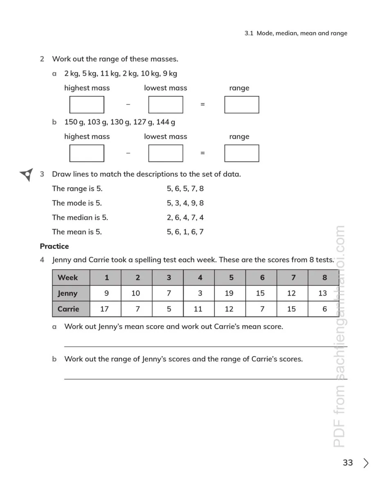
3.1 Mode, median,
ơnd range
2
Work out the range of these masses.
a
2 kg, 5kg, 11 kg, 2 kg, 10 kg, 9 kg
highest mass
lowest mass
range
b_
150g, 103g, 130 g, 127 g, 144g
highest mass
lowest mass
range
=
3
Draw lines to match the descriptions to the set of datd.
The range Is 5.
5,6, 5, 7,8
The mode IS B.
5,3,4,9,8
The mediơn Is 5.
2,6,4,7,4
The mean is B.
5, 6, ly 6, 7
=
Practice
O
4 Jenny and Carrie took q spbelling test each week. These are the scores from 8 tests.
©
Week
1
2
=
4
5
6
7
8
J]enny
O
10
7
3
1Ð
12
Cœrrie
17
7
5
11
12
7
15
© Ất
C)
a
Work out Jenny's meœn score and work out Carrie's medan score.
———
b_
Work out the range of Jenny's scores and the range of Corrie's scores.
le
A_.
33 ›
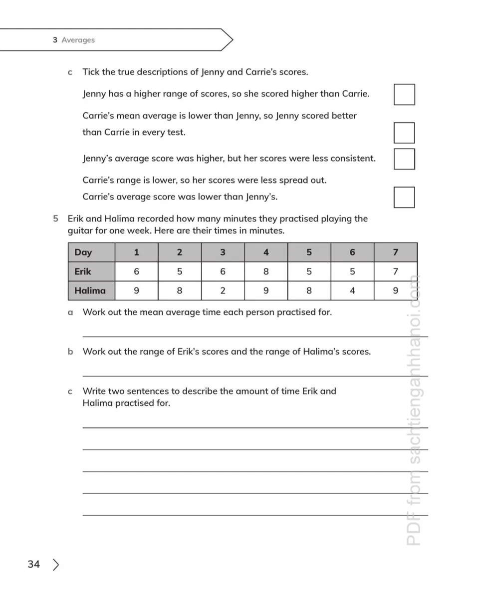
3 Avergges
C
Tick the true descriptions of Jenny and Carrle's scores.
Jenny has a higher range of scores, so she scored higher than Corrie.
Corrie's meơn gvergge Is lower than Jenny, so Jenny scored better
than Corrie In every test.
Jenny”s avergge score wds higher, but her scores were less consistent.
Corrle's range Is lower, so her scores were less spredd out.
Corrie's average score wgs lower than Jenny's.
5
Erik and Halima recorded how
minutes they practised playing the
guitar for one week. Here
their times in minutes.
Day
1
2
3
4
=
6
7
Erik
6G
5
©
8
5
5
7
Halima
©
8
2
9
8
4
8
=
|
a
Work out the mean
time eqch person prdctised for.
—=m_—
b
Work out the range of Erik's scores and the range of Halimd's scores.
cC
Write two sentences to describe the amount of time Erik and
Halima practised for.
——— —
——
A
34 ọ
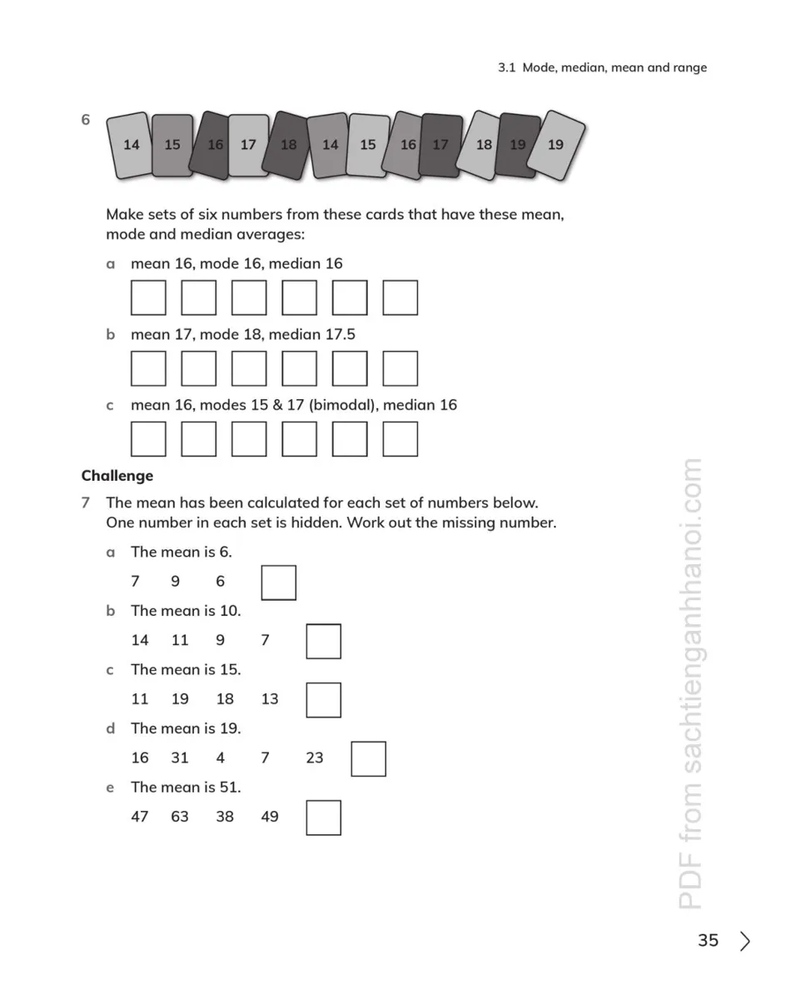
3.1 Mode, median,
ơnd range
6
14
15
16
17
18
14
15
16,
17
18. 19
19
Moke sets of six numbers from these cards that have these men,
mode and median
a
medan 16, mode 16, medion 16
b
meơn 17, mode 18, medion 17.5
C
meơn 16, modes 15 & 17 (bimododl), median 16
Challenge
7
The mean hgs been colculated for each set of numbers below.
One number in
set is hidden. \Work out the missing number.
a
The medn ¡s 6.
Ỷ
9
©
b
The meœn ¡s 10.
14
11
9
7
C
The medn ¡is 15.
11
19
18
13
d
The
¡s 19.
16
31
4
7
23
e
The medn ¡is B1.
47
63
38
49
=
8
35
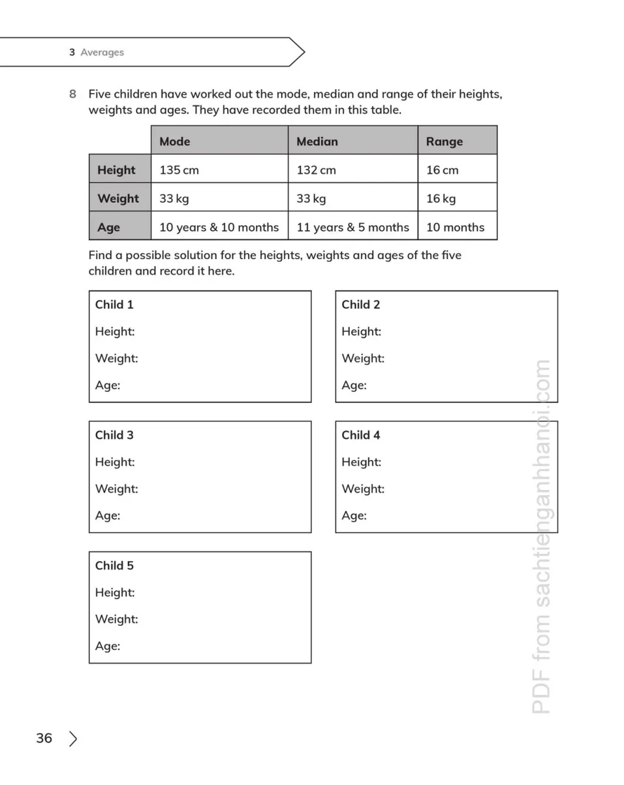
3 Avergges
8
Five children have worked out the mode, median and range of their heights,
weights and ages. They have recorded them ïn this table.
Mode
Median
Range
Height
135cm
132cm
16cm
Weight
33 kg
33 kg
16kg
Age
10 yedrs & 10 months
11 yedrs & 5 months
10 months
Find Q possible solution for the heights, weights and ages of the five
children and record It here.
Child 1
Child 2
Height:
Height:
\Weight:
\Weight:
=
Adge:
Child 3
Child 4
Height:
Height:
\Weight:
\Weight:
——
Child 5
Height:
Œ)
\Weight:
36 ›
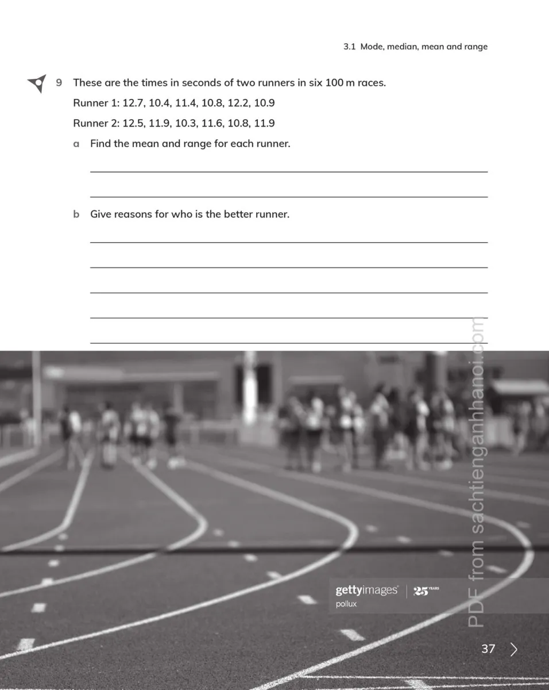
3.1 Mode, median,
ơnd range
These œre the times in seconds of two runners in six 100 m races.
Runner 1: 12.7, 10.4, 11.4, 10.8, 12.2, 10.9
Runner 2: 12.5, 11.9, 10.3, 11.6, 10.8, 11.9
Find the meœn and range for eqach runner.
b
Give reqasons for who Is the better runner.
gettyimages
.
pollux
a
37
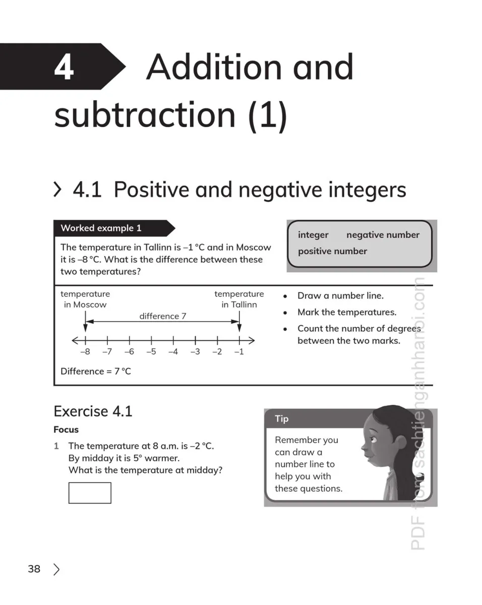
A
Addittion and
subtroction
› 4.1 Positive and negdtive Integers
Worked example 1
Integer
negdtive number
The
in Tollinn ¡s —1 °®C and In Moscow
positive number
it is —8 °C. What ¡is the difference between these
two temperdtures?
temperdture
tembperdture
Draw Q number line.
¡in Moscow
in Tallinn
C)
difference Z7
Mork the temperatures.
Count the number of degrees
—8
—7
—6
—b
-4
—3
—2
=1
between the two marks. (
Difference = 7 °C
_———
Exercise 4.1
Tip
Focus
Remember you
The temperdqature at 8 q.m. is —2 °C.
By middoy it is 5°
cơn draw œd
number line to
Œ)
is the temperature at midday?
help you with
these questions.
|
m
0A
38
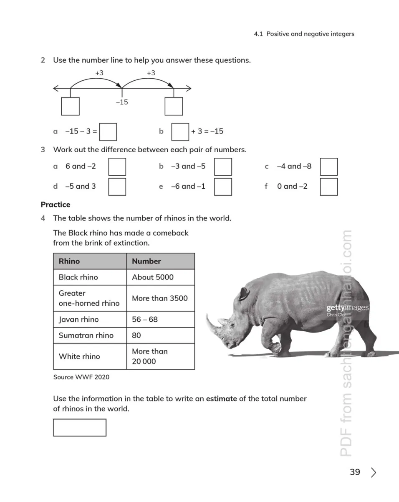
4.1 Positive and negdtive integers
2
Use the number line to help you answer these questions.
T3
T3
—>
-15
Ỉ
a
-15-3:
b
+3=-15
3
Work out the difference between edch pdlir of numbers.
a
6 and -2
b
-3and-B5
C
-4 and —8
d
=B and 3
e
6 and —1
f
0 and -2
Practice
4
The table shows the number of rhinos In the world.
The Black rhino has
a
from the brink of extinction.
Rhino
Number
Black rhino
About 5000
Greoter
More than 3500
one-horned rhino
Zsettÿyifages
Javan rhino
56 -68
rhino
830
White rhịno
More than
20 000
r&
Source WWF 2020
Œ)
Use the Informgtion in the table to write an estimoate of the totol number
of rhinos in the world.
le
A_.
39 »
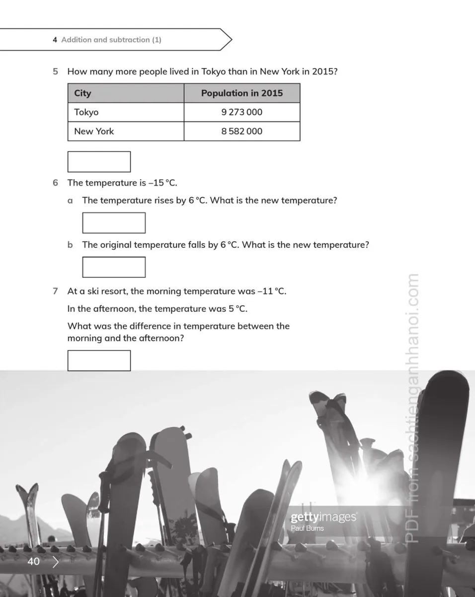
4 Addition and subtraction (1)
B
How many more people lived In Tokyo than In New York in 20152
City
Population in 2015
Tokyo
9273000
New York
8 582000
6
The temperature Is —15 °C.
œ_
The temperdture rises by G6 *C. Whdt IS the new temperdture?
b_
The original
fdlls by G6 °C.
is the new temperature?
Z7
Atgd ski resort, the morning temperature wgs —11 °C.
In the afternoon, the temperdature wos 5 °C.
What wos the difference in temperdature between the
morning and the gfternoon?
(Œ
gettyimages
_
Paul BUfns
40
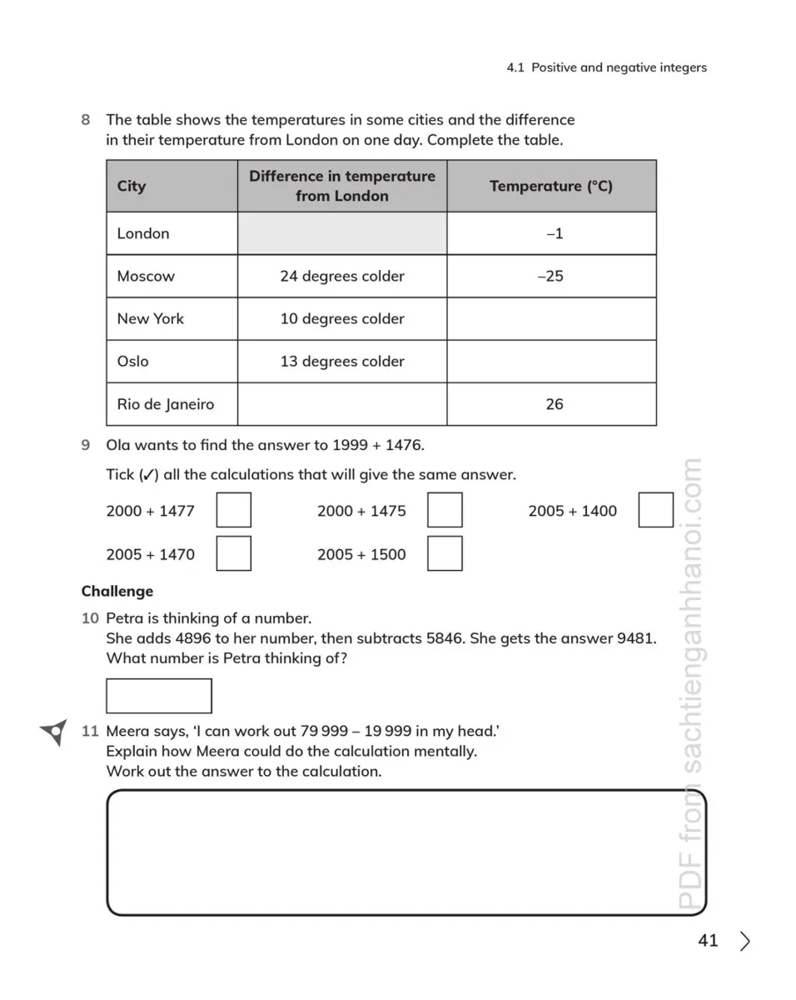
4.1 Positive and negdtive integers
8
The toble shows the temperdatures In some cities and the difference
In their temperdture from London on one day. Complete the table.
City
Difference in temperature
Temperdture (°C)
from London
London
—1
Moscow
24 degrees colder
New York
10 degrees colder
Oslo
13 degrees colder
Rio de Janeiro
26
9
Ola
to find the answer to 1999 + 1476.
Tick (/) all the calculations that will give the same answer.
2000 + 1477
2000 + 1475
2005 + 1400
2005 + 1470
2005 + 1500
10
Is thinking of a number.
She adds 4896 to her number, then subtracts 5846. She gets the answer 9481.
What number ¡s Petra thinking of?
11 Meerd soys, 'l can work out 79 999 - 19 999 in my hegd"
Explain how Meera could do the calculation mentdlly.
Work out the answer to the colculdtion.
Œœ)
L_
41 ›
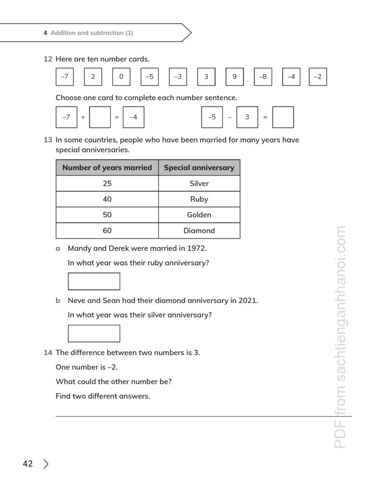
4 Addition and subtraction (1)
12 Here dre ten number cords.
—7
2
0
=B
3
9
-4
Choose one cơrd to complete each number sentence.
7 |+|
4
3
13 In some countries, people who have been married for many yegrs have
specidl anniversories.
Number of yedrs married
Specidl anniversary
25
Silver
40
Ruby
50
Golden
60
Diamond
Mandy and Derek were morried in 1972.
In what year wos their ruby anniversory?
b
Neve and Sean hdad their diamond anniversdry In 2021.
In what year wos their silver anniversgry?
14 The difference between two numbers ¡s 3.
One number ïs —-2.
What could the other number be?
——
Find two different answers.
———————
LL
a
42 »
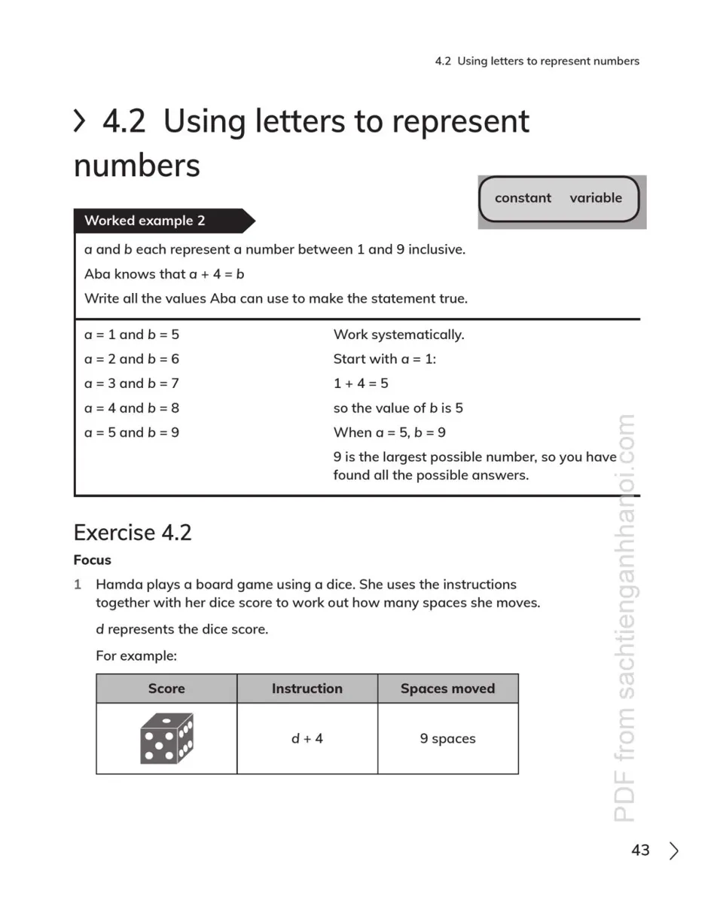
4.2 Using letters to represent numbers
› 4.2 Using letters to represent
numbers
constant
vorioble
Worked example 2
ga œnd b egch represent a number between 1 and 9 inclusive.
Aba knows that a + 4=b
Write all the values Abd cơn use to make the statement true.
a=1andb=bB
Work systemoticdlly.
Start with a = 1:
1+4=5
a=4œndb=8
so the vdlue of b ¡is 5
When a=B5,b=9
9 ¡s the largest possible number, so you have
found dll the possible answers.
m_——mm
ExercIse 4.2
Focus
41
Hamda plays a
game using a dice. She uses the Instructions
together with her dice score to work out how many spbgces she moves.
d represents the dice score.
For example:
Score
Instruction
Spgces moved
d+4
9 spdces
A
43 ›
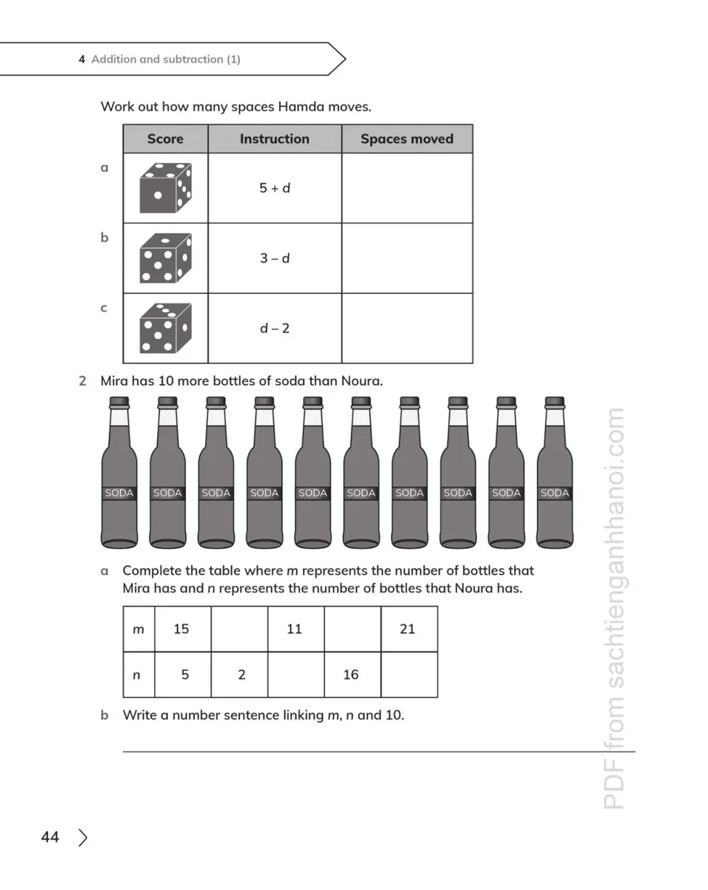
4 Addition and subtraction (1)
Work out how many spgces Hamda moves.
Score
Instruction
Spqaces moved
®
5+d
b
3-d
C
d-2
2_
Mira has 10 more bottles of sodd than Nourda.
SODA
SODA
SODA
SODA
SODA
SODA
SODA
SODA
SODA
SODA
Q
Complete the table where m represents the number of bottles that
Mira has and n represents the number of bottles that Noura hos.
m
15
L1.
21
n
5
2
16
b
Write a number sentence linking m, n and 10.
a
44
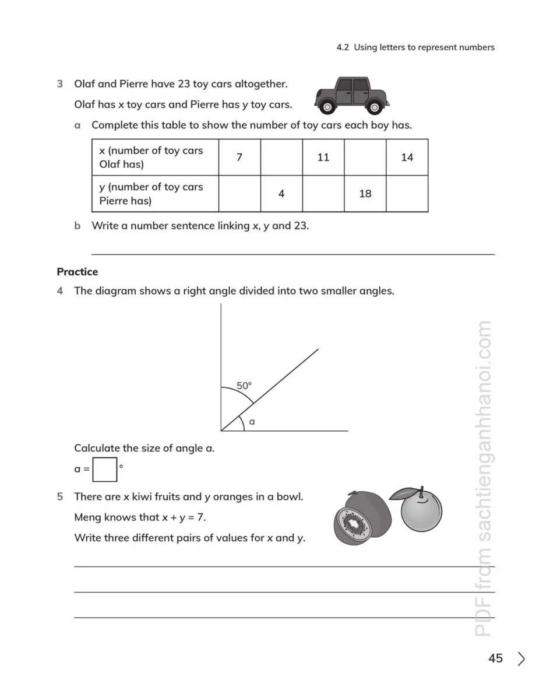
4.2 Using letters to represent numbers
3
Olaf and Pierre have 23 toy cors altogether.
Olaf has x toy cars and Pierre has y toy cdrs.
a
Complete this table to show the number of toy cars eqch boy has.
x (number of toy cdrs
7
11
Olaf has)
14
y (number of toy cors
4
18
Pierre hgs)
b
Write Q number sentence linking x, y and 23.
Practice
4_
The diagram shows d right angle divided Iinto two smaller angles.
50°
a
Calculate the size of angle q.
a=
5
There are x kiwl fruits and y oranges In a bowl.
Meng knows that x + y = 7.
Write three different poirs of values for x and y.
——
— ———————
A
45
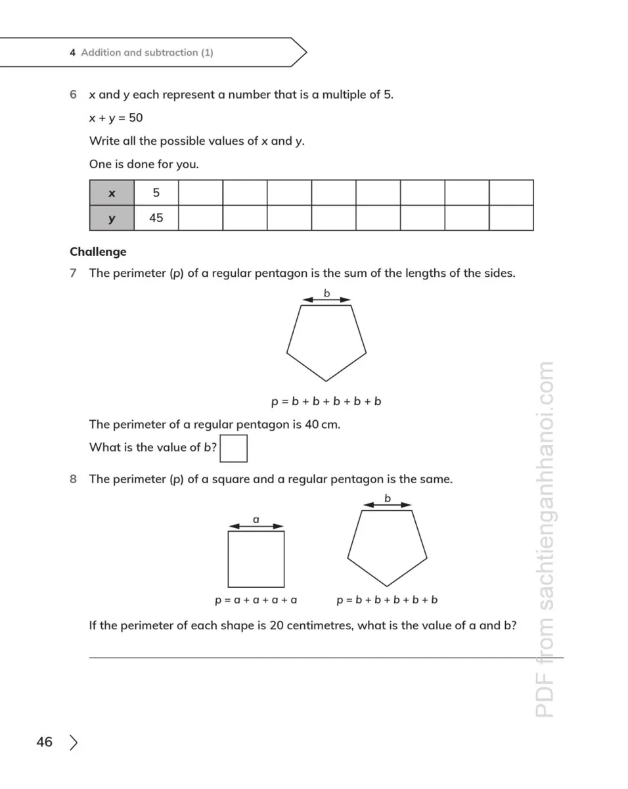
4 Addition and subtraction (1)
6
y egch represent a number that is a multiple of 5.
x+y=50
Write all the possible values of x œnd y.
One ¡is done for you.
x
5.
y
45
Challenge
7
The perimeter (p) of a regular pentagon IS the sum of the lengths of the sides.
b
p=b+b+b+b+b
The perimeter of a regular pentagon ¡s 40 cm.
Whot ¡is the volue of b?|
8
The perimeter (p) of a squore and ad regular pentgagon IS the same.
b
Œ
p=a+a+gd+da
p=b+b+b+b+b
œ)
lf the perimeter of eqch shape is 20 centimetres, whdt is the value of a and b?
O
A
4G »
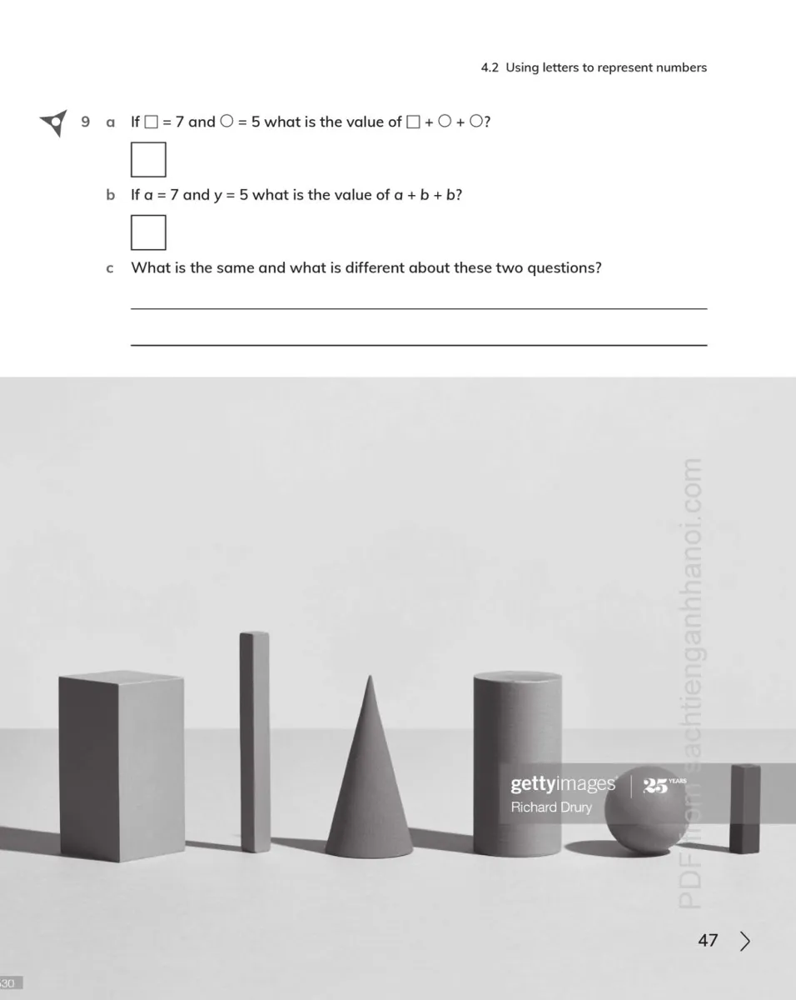
4.2 Using letters to represent numbers
9
da lfL]= 7 and C = 5 whot is the vdlue of [_] + C + €?
5 whot is the vdlue of[_] + C + ?
b_
lfa= Zond y = 5 whơd is the vdalue of Q + b + b?
C
What is the same and what is different about these two questions?
=
le
C
(
—
—
C
A9)
S=}
®
_—
49)
gettyimages
5
Hichard Drury
P
47
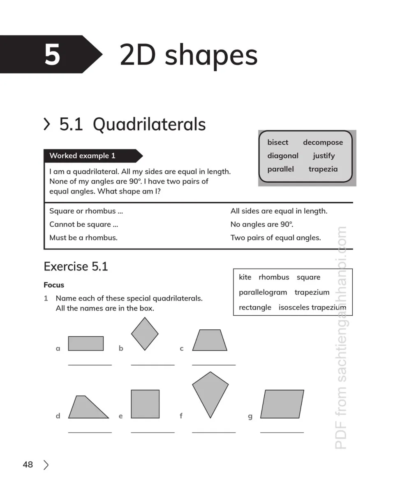
2D shgpes
> 5.1 Quodrilaterols
bisect
decompose
Worked example 1
diagondl
Jjustify
| am Q qugdhrilaterdl. All my sides are equdl in length.
pardllel
trapezid
None of my angles are 90”. | have two pdirs of
equdl angles. What shape am I?
Squdre or rhombus...
All sides are equdl In length.
Cannot be squdre...
No angles are 90°.
Must be a rhombus.
TWwo pdirs of equdl angles.
ExercIse 5.1
kite
rhombus
squodre
Focus
(
pardllelogram trapezium
Name eqch of these specidal quadrilaterdls.
All the names
in the box.
rectangle
Isosceles trapezlum
b
d
9
48
»
5.1 Qudadrilaterals
2
Complete these properties of a kite. There is q diagram to help you.
a
lt has
| pdirs of equol sides.
b
lt hqs
| pdơir of equdl angles.
C
The diagondls cross eqch other at
d lthos| | line of symmetry.
3
Complete these properties of a rhombus.
There
some diagrams to help you.
a
lt
| equdl sides.
b
lt has
| pdirs of equdl angles.
C
lt has
pdirs of pordllel sides.
d
The diagondls bisect eqach other œt |
O
e
lt hos |
| lines of symmetry.
le
A
49
5 2D shapes
Practice
4
Write down the name of the shape being described.
a
| am g qugdhrilaterdl. All my sides are different lengths.
TWwoO of my sides are pardllel.
lam œ.
b
| am qugdrilaterdl. All my sides meet dt right angles.
My diagonols bisect eqch other, but not at 90”. | am Q
C
| am Q qugdhrilaterol. | have two pdirs of pardllel sides,
two pdơirs of equdl sides and two pdirs of equdl angles.
None of my angles are 90”. | am a_
5
J]ake draws this rhombus ơnd kite. He labels the lines that make the
shgpes gq, b, c, d and e, f, g and h. He draws the shqapes so that b Is
pordllel to h, and the angles
x
the same size.
a
d
D
C
Write true or false for each of these statements. Justify your answer.
|
b ¡is pordllel to d
—— —
H
h ¡is pardllel to f
LL
50 ›
5.1 Qudadrilaterals
d ¡s pardllel to h
IV
g is porollel to e
6
Draw Q diagram to show how an isosceles trapezIium cơn tessellate.
Challenge
7
a
Describe the similarities between d rectangle and a pordllelogram.
——
b
Describe the differences between ơn isosceles trapezium œnd da kite.
LL_
8
51 ›
5 2D shapes
8
Put the shapes dq to f through this classification flow chart and
Wwrite down the letter where each shape comes out. For example,
when you stort with the squdre, you end dt the letter H.
Stort
Yes
Diagonols meet`
No
_at 90°2
Yes
One pdir oŸ
No
Yes
Two lines oF No
Ösqudl angles?.
.symmetry?_
G
Yes
All angles 90°7
No
No.
One pdir of
Yes
sides?
m
[!|
|K|
a
Squdre
b
Rectoangle
C
Rhombus
d
Pardllelogram
e
Kite
f
lsosceles trapezIium
9
A, Bơnd C qre three points shown on this grid. D is another point on the grid.
9-
8-
e«P
7+
6-
B-
4.
c°
3
2
0
l Ì
——
a
When D IS at (7, 4) is quadrilateral ABDC da squdre? Expldin your answer.
_.. L ˆ
52 »
5.2 Circles
b_
Point D moves so that quadrilateral ABCD ¡s a pardllelogram.
What are the coordinates of point D?
Point D moves so that quadrilateral ABDC ¡s da kite.
Write down two possible sets of coordinates for the point D.
› B.2 Circles
Worked example 1
centre
circumference
Label the parts of this circle.
diameter
radius
Circumference is
radius
the perimeter.
Centre is in the
circumference
middle.
Radius ¡s the
distance from
Œœ)
the centre to the
centre
circumference.
diameter
Diameter Is the
O
distance qCroSS
the circle, going
through the centre.
53
5 2D shapes
ExercIse 5.2
Focus
1
This is how Tami labelled the ports of q circle.
radius
circumference
diameter
centre
Expldin the mistakes she hgs made.
—
——
—.-
2
Meosure the radius of eqach of these circles.
a
radius =
cm
b
radius : =
|mm
54 »
5.2 Circles
3
Draw œ circle with Q radius of
a
3cm
b
40 mm
mmmmm
Practice
Š)
4
[ Draw œ circle with a radius of
a
3.7cm
b
52mm
=
——
hò
|
|
+ % |
|
|
|
LL_
2Ó
5 2D shapes
5
Write true or false for eoch of these statements.
œ_
A rddius of 5 cm ¡is the same gs Q diameter of 10 cm.
b
A diameter of G cm ¡s the same gs œ rgdius of 12 cm.
C
A radius of 70 mm Is the same gs d rodius of 7 cm.
d
A
of 45 mm Is the same gs a diameter of 9 cm.
6
a
Draw dq dot and label the point C.
Moke sure there is about 5 cm of spqace qbove, below, to the left
and to the right of your point.
b
Draw the set of points that are exactly 4.2 cm from the point C.
Œœ)
——=
56 ›
5.2 Circles
Challenge
7
a
Draw a circle with radius 7 cm. Label the circle A.
O
O
=
|
|
.C
|
+ % |
|
|
|
LL
A
57
5 2D shapes
Draw dq circle with radIus 3 cm, inside circle A so that ¡it touches circle A.
Label the circle B.
Your diagram should look something like this.
A
L2
B
OF
With Q ruler, accurately megsure the distance between the centre
of circle A and the centre of circle B.
d
What do you notice about your answer to part c and the radii
megsurements of circles A and B?
e
Draw two more circles that touch Inside. Choose your own rodii
megsurements. Megsure the distance between the centres of
your two circles. What do you notice?
Complete this generol rule:
——
The distance between the centres of two touching circles that touch
inside ¡is the same os the.
8
Zqarg Wwqnts to draw
made of squores Inside circles like this.
=
Step 1: Draw a squore.
Step 2: Guess where the centre
oƒ the square is and mark a dot.
Put the point oƒ the compasses on this dot
This ¡is the method she uses to
and open the compgsses so that the penci
draw one of the squdres ¡in d circle.
is on d corner oƒ the squore.
Step 3: Draw a circle. lƒ the corners oj the
dowt touch the cừcle, rub the
circle out and tru again with a
difƒerent centre pointl
A
58
»
5.2 Circles
a Try to draw Q squore In d circle using Zarg's method.
What do you think of her method?
=
C
|
-C
-C
|
b
Cơn you improve on her method? lf you cơn think of a better method,
(5
Œœ)
write It down.
————- ——
59 ọ
5 2D shapes
› 5.3 Rotdtiondl symmetry
Worked example 3
order
Use tracing pgper to work out the order of rotationol
rotationdl symmetry
symmetry of q rectangle.
Step 1: Trace the shape.
Step 2: Put your pencil on the centre of
the shape.
Step 3: Turn the tracing pdaper one full turn and count the number of
times the shape fits on ¡tself.
Stort
Once
Twice
©
The rectdndgle fits on itself twice, so It has order 2.
60
5.3 Rototional symmetry
ExercIse 5.3
Focus
Use tracing pgper to work out the order of rotationdl symmetry
of these shqapes.
8
D
d
e
“ˆ
Match eqch shape to ïts order of
symmetry.
=
O
lô
a
b
C
C
I
Order 4
II
Order 2
II
_Order 1
IV
_Order 3
3
œ_
Draw the line of symmetry on to the triangle.
b
Write down the order of rotationdl symmetry of the triangle.
=
8
G1
5 2D shapes
Practice
Write down the order of rotationdol symmetry of these shgpes.
a
5
Write down the order of rotationdl symmetry of these patterns.
a
G
Write down the order of rotationdol symmetry of these roqgd signs.
a
b
C
Write the letter of each shape in the correct spdce.
Shape A has been done for you.
Number of lines of symmetry
0
1
2
3
4
1
2
Order of rotationdl
symmetry
3
4
A
G2
5.3 Rototional symmetry
B
E
F
8
Malli ¡is making a pattern from grey and white squores.
This is what she has drawn so for.
®
On this copy shade In one more squdre so that
the pattern has order 2 rotdtiondal symmetry.
le
D
G3
5 2D shapes
b
On this copy shade In five more squdres so that the pattern
has order 4 rotationdl symmetry.
On this copy shade In seven more squores so that the
pattern has order 2 rotdtiondal symmetry.
9
Sadik has these nine squores.
He wants to grrange the squdres to form a squdre pattern with two lines of
symmetry and rototionol symmetry order 2. Show two woys that he cơn do this. Œ
G4
Fractions and
percentgges
›» 6.1 Understanding fractions
Worked example 1
denominator
Improper fraction
mixed number
Parveen ¡s thinking of a number.
numerdtor
She soys, “Two-thirds of my number is 30.
operdator
proper fraction
What number IS Porveen thinking of?
s of the number IS 30 + 2 = 15
sis half of Š
3
3
1
3
3
is three times
3
_“”...
Of the number IS 15 x 3 = 45
Parveen ¡s thinking of 45.
ExercIse 6.1
Focus
1
Represent these divisions gs fractions.
a
5 divided by 8
b_
4divided by 3
8 divided by 7
dđ
- 7 divided by 10
G5
6 Fractions and percentages
2œ
Show one woy that five children can share 2 pizzgs equdolly between them.
How much pizzg does eoch child get?
b
Show one woy that two children can share 5 pizzgs equdlly between them.
How much pizzg does eqch child get?
3
What is : of 16?
:
Would you rather be given 5 of $18 or : of $40? Explgin your decision.
—
6G
»
6.1 Understanding fractions
Practice
5 ›.
Work out the answer to each question to help you find your woy through the moze.
start
3 of16
48
Z
3
63
5
2
of 22
40
27
3 of18
O
6 of 15
24
2 of 16
E]
30
90
28
£ of12
14
4 of 15
3
20
end
©
Brian reads : of a 15-page book.
of an 8-page book.
Who regads more pages?
Explain how you know.
a
———
8
G7
6 Fractions and percentages
7
Complete this table to show fractions of 36.
Fraction
h
:
:
11
Amount
9
8
Find the missing numbers.
3 of24=
Š of24=
24
3 of24=
of 24=
Challenge
K)
4
9
of 18?
Explain how you know.
10 a_
Mondy is thinking of a number.
She soys, 'Five-thirds of my number is 45."
What number Is Mandy thinking of?
b
Ollie IS thinking of a different number.
He soys, “Ten-ninths of my number ¡is 90.
What number ¡is Ollie thinking of?
G8 »
6.2 Percentages
11 Use eqch of the numbers 2, 3, 4 and 5 once to complete these statements.
ofG=4
of12= 15
›» 6.2 Percentages
Worked example 2
percentgge
Leo hgas two gpple trees In his garden. He labels them A and B.
per cent
operator
A
B
Tree A produces 40 kg of apples.
Tree B produces 10% more thơn tree A.
How many kilograms of apples does tree B produce?
=
1
Find 10% of 40 and add it to 40 to find the
10% of 40 = 10
of 40 = 4
moss of the apples produced by tree B.
œ)
40+4=44
Tree B produces 44 kg of apples.
LL
0
69
6 Fractions and percentages
ExercIse 6.2
Focus
Find 10% of the quantity, then use your answer to find 20%, 30% and so on.
\Write the answers under the percentgges on the number line.
0%
10%
20%
30%
40%
50%
60%
70%
80%
90%
100%
$200
2
Find 10% of these quơntities.
a
600
b
90cm
C
$40
d
170 kg
3
]oin each box to the correct amount.
Amount
50% of 40
10
12
14
10% of 120
16
18
100% of 16
20
Practice
4
a
Find 10% of 80
b
Find 5% of 80
C
Find 15% of 80
70 `
6.2 Percentages
©)
Here Is q grid of ten squdres.
What percentage of the grid Is shaded?
Q
Complete these percentage diagrams.
a
80
Z5%
80
20%
b
O
5%
60
Z5%
(2
7
Haibo makes 250 grams of fruit and nut mix.
15% of the mix ïs rdisins. 259% of the mix ïs cranberries. The rest ¡is almonds.
How
grams of
does Haibo use?
=
A
Z1
6 Fractions and percentages
Challenge
8_
Huan has two plum trees A and B in her
A
B
Tree A produces 30 kg of plums.
Tree B produces 10% less than tree A.
How many kilograms of plums does Huan get from both trees together?
=
O
9
75% of a number is 48.
Whot IS the number?
Tip
The answer IS not 36.
(Œ
10 50% of children in a sports club go swimmind.
72
6.3 Equivdlence and comporison
50% of the children who go swlimmiing dlso dive.
Five children swim and dive.
How maơny children re In the sports club?
| children
› 6.3
and compdriIson
Worked example 3
equivdlent fraction
Write these numbers in order of size,
simplest form
starting with the smdllest.
0.2
5
25%
3Ó
10
0.23
25% =0.25
Write the fractions and percentgges gs
3
:.0.3
equivolent decimols.
10
2. 4
=0.4
œ)
5
10
In order:
Write the decimdls in order starting with
0.2, 0.23, 0.25, 0.3, 0.4
the smollest.
L_
0.2, 0.23, 25%, 10' 5
3 2
Write the origindl values in order.
"
P
73
6 Fractions and percentages
ExercIse 6.3
Focus
1
Write these fractions in their simplest form.
5
8
a
b
KÃ
10
20
C
12
2
What fraction of the shape Is shaded?
Write your answer in Its simplest form.
3
Write these prices in order starting with the smoallest.
$4.07
74 cents
$4.70
$0.47
$7.40
1
4
Which numbers are equivdlent to
4
0.5
25.
100
0.75
0.25
Practice
5
Write these numbers In their simplest form.
a
13
15
Ñ
b
5à
cC
10 55
45
74
6.3 Equivdlence and comporison
6
Use the symbols <, > or = to make these statements correct.
70%
|0.65
60% | | 0.06
25%
23%
:
0.7
lš
0.3 |
:
7
Here qre three statements about fractions and percentgges.
Tick (v/) the statements that re true.
Cross (X) the statements that are not true and write the correct statement.
a
3 -Is equdl to 35%
5
b
100. equdl to 7%
T-
9
C
10
equdl to 9%
8
Which two cards moke the number sentence correct?
8
0.35
š
| 39%
0.5
70%
1
2
9
Omar and Hassan do the same test.
Omar scores 70 out of 80. Hassơn scores 70%.
—'
Who has the higher score? Expldin how you know.
—
aA
75 ›
6 Fractions and percentages
10 Write these numbers in order of size, starting with the largest.
0.7
s
0.82
75%
25
11 Find two poirs of equivdlent fractions from this list.
Circle the fraction in Its simplest form In eqach pdir.
16
10
9
6
` :
20
15
12
10
12 Circle the smdller number in eqch box.
Đ
1.2
1ã
12
1.4
lệ
1,5
gettyimages
YI
Suparerg Suksal / EyéEm
Exploring
› /.1 Rectangles and triangles
Worked example 1
qreda
Estimate the ared of this triangle.
——_—r—
Centimetre squdred pgper.
10 whole Squores
covered by
Count whole squores that are covered
the triangle.
by the triangle.
There are no squores that are less
thơn half covered.
There are 5 half squores covered by
the triangle, that makes 25 whole
squores covered.
| estimate that the ared of the
triangle Is 122 cm.
Do not count squores that are less than
half covered.
Pdir up squores that are half covered to
make whole squores.
Write your estimdte using units of ared. The
squores re centimetre squdres so we use crr?.
77
7 Exploring megsures
ExercIse 7.1
Focus
1
Multiply the width of the rectangle by ItS length to calculate
ared.
Write your answer using units of đrea.
9km
8cm
7m
9km
4m
3cm
2
Circle the rectangles that have been divided into two equdl pieces.
I
l
I
”= — =—=— — 'ô
—m—m—
“———
Sử
I
I
——————
78
2
7.1 Rectangles and triangles
3d _
is the
of this rectangle?
3cm
4cm
b
Divide the
of the rectangle by 2 to find the ared of one of the triangles.
What is the
of the triangle?
Expldin why dividing the ared of the rectangle by 2 gives us the
of the triangle.
Practice
4
Estimodte the ared of eqch triangle to the nedrest half centimetre.
"
79
7 Exploring megsures
Circle the grey triangles that have ơn gred of 9 cm”.
You will need to megsure the sides of the rectangles.
a
b
C
d
e
l2
Work out the length of the missing side.
m
Ared of this triangle is 12 m?
8m
30
2
7.1 Rectangles and triangles
Challenge
Draw some different right-angled triangles on the squodres that have
ơn
of 6 cm?.
How could you test that the triangle has an red of 6 cm??
—
le
A_.
ö1
7 Exploring megsures
8
Chatd is pdinting triangular tiles to create a mosdic.
This Is the actudl size of one tile.
2cm.
2cm
One 15 ml pot of pdint covers 18 cm”.
15ml
What is the total number of pdint pots that he will need to buy to cover 7B tiles?
9
2cm
6cm
4cm
6cm
a
is the ared of the large squdre?
b
Whoat is the areg of each white triangle?
C
Whot is the ared of the grey squdre?
32 »
7.2 Time
› /.2 Time
ExercIse 7.2
Focus
1
Convert these times into minutes and seconds.
a
2 minutes =
minutes and |
| seconds
b
2.5 minutes =
| minutes ơnd |
| seconds
C
3.25 minutes =
| minutes
|
| seconds
d
3.75 minutes =
| minutes and |
| seconds
2
Draw lines to match the same times.
2 hours and 45 minutes
1.25 days
1.25 hours
5,5 minutes
4 doys and 12 hours
5 hours and 30 minutes
5.5 hours
1 hour and 15 minutes
45 days
œ
q
2.75 minutes
2.75 hours
minutes and 45 seconds
rr. `
5 minutes and 30 seconds
1 day and 6 hours
Œœ)
4 hours and 30 minutes
4.5 hours
L_ =
A
33 ›
7 Exploring megsures
Practice
3 ›.
This line graph shows equivdlent amounts of time In hours and in minutes.
G5-
60:
D8 :
50 -
45-
40-
35
30-
295-
2Ú -
15:
10:
S
0
=5
Q;
014
09
1
Hours
Use the conversion graph to convert these times from hours to minutes.
a
O.2hours =
| minutes
b
0.7 hours =
minutes
C
0.45 hours =
minutes
d
0.95 hours =
| minutes
34 »
7.2 Time
4
2045
Monday
Tuesday
\Wednesday
Thursday
Friday
Sqturday
Sunday
31
1
2
3
4
5
O
7
8
O
10
11
12
13
14
15
16
17
18
20
21
22
24
26
28
293
30
31
This Is a page from d cdalendor for the year 2045.
Use whdqt you know gbout the months of a year and the number
of days in each month to answer these questions.
a
Suggest two months that this calendar page could be for.
how you know.
b
lf the calendor ¡is from the second half of the yeor,
what ¡is the date circled?
C
Use whdat you know gbout yeors, months and days to work out
how old eqch of these people will be on the circled date.
|
Cheng wos born on 11" July 2013, he will be
'yeors,
| months
and |
days old.
II
Halima wgs born on 2"# April 200G, she will be
|
|
| months Œœ)
ơnd | days old.
Magda wos born on 27“ July 1975, she wIl be|
| yeors,
| months œ
and |
doys old.
L_ =
aA
S5 ›
7 Exploring megsures
IV
Jack wq = born on 18 October 1972, he will be
|
| months and
|days old.
V
Stefan wqds born on 30” September 196G, he will be
|years,
| months and
| days old.
5
Six people are œt q rdilwdy station wditing for six trgins to
different destinations.
Use the clues to work out the destination of eqch trdin.
Destination
Depdarture time
11:48
12:18
12:58
L3:23
13:53
14:28
Clues
The
for Barcelonda leaves later than the troin for Brussels,
but before the trgin for Venice.
The trdain for Brussels leaves between 12 o'clock and 1 o 'clock.
The train for Vienng
later than the trgin for Copenhagen,
but before the train for Barcelond.
The
to Viennd leaves 40 minutes before the next train.
The trgin that leaves at 7 to 2 is going to a place with six
letters in Its name.
The
for Worsgw leqaves before the train for Venice but later
than the troin for
96G ›
7.2 Time
Tip
Use this logic table to work out which trgin
left when. Put q cross in any places that cannot
be the correct time for that train. Tick the time
when you know it is correct for that trgin.
11:48
12:18
12:58
13:23
13:53
14:28
Boarcelong
Venice
Brussels
Vienna
Copenhagen
©
Make your own timetgble. Use 24-hour clock times.
There
five stations on the line. You can name the stdations.
There are three trains. They can go back and forth along the line
gs mơny times gaS you like.
These œre the times between stations.
®|
—Ö
0.4 hours
1®:
0.95 hours
1.2 hours
E2
Ñ©
1.15 hours
Trains must stop at eqach station for 2 minutes.
At the end of the line the train stops for 0.3 hours before going back.
aA
37 ›
7 Exploring megsures
From.
tO.
From.
to
Tip
Look at other bus or trgin timetdgbles for idegs.
(Ề)
In the first table, write the arrivdal and departure times from
the first station to the fifth stotion.
5
In the second tgble, write the arrivdl and deporture times from
Œœ)
the fifth station back to the first station.
c
ứ=
L_
=
A
38 »
:
Addttion and
subtrgction
› 8.1 Adding and subtracting
decImdl numbbers
Worked example 1
decimal place
Add together dll the numbers greqter than 0.7
trailing zero
0.507
0.8
0.38
0.09
0.747
0.699
08+0.747
Identify the numbers greqter than 0.7
Estimote:
Estimote the answer and then add the numbers:
08+0.7=15
Ũ
0.800
Align the decimdl points correctly and add
0.747
trơiling zeros so dll the numbers have the same
4.547
number of
places.
1
Compơre your answer with the estimdte to
check ït is reasongble.
89
,
FotografiaBa‡k
8 Addition and subtrqaction (2)
ExercIse 8.1
Focus
1_
Abi poys $2 to buy some cheese that costs $1.35.
Complete this method to show how much chơnge Abi gets.
2
139 -
0.05
2A chef is preporing school dinners.
She weighs 6.3 kg of pastd.
She needs 10 kg.
How much more pbgstd does she need?
3
Calculate.
a
4.504 +
=
b
4985-2.347=
Here
six number cards.
0.003
0.01
| 0.006
0.007
0.01
| 0.004 |
Use eqch card once to complete these two calculations.
90
8.1 Adding and subtrgcting decimal numbers
Practice
B
A shop has these Items for sole.
Coffee maker
$29.95
Tooster
$30.75
Can opener
$14.25
lce cream maker
$26.80
Rovinder buys ơn ice cream maker and Q coffee maker.
Q
How much does he spend altogether?
b_
How much change does he get from $60?
Ai cuts Q piece of wood megsuring 1 metre Iinto three pieces.
0.2m
0.54m
not to scole
How long I¡s the last piece?
91
8 Addition and subtrqaction (2)
7
Decimal pyramids are built like this.
Eoch number ïs the totol of
2.9
the two numbers below.
1.2
1.7
Build these pyramids.
a
b
1.07
4.8
5.9
22323
5.6
G.12
3.6
0.023
Challenge
S
8
Find the missing digits.
C
(
a
b
3
9
O
7
8
O
3
O
8
3
3
5
7
œ)
9
Find three decimols that add to 1.
TWo of the decimdls must have three decimdl places and
one must have two decimol places.
a
32 »
8.1 Adding and subtrgcting decimal numbers
10 Draw lines from two bags to edch box to make the totdl mass
Written on the box.
»Â
2.9kg
(0.27kg.
'3.8kg
(0.49kg
4.1kg
|1.19kg]
1.2kg
8.7kg
5.99 kg
(0.34kg.
2.7kg
'4.9kg
1.4kg
/0.92kg.
(0.86kg
Label the last box with the totdl of the remdining two bags.
se this
for working.
`
©œ
(
œ)
93
8 Addition and subtrqaction (2)
› 8.2 Adding ơnd subtracting
froctions
common denomindtor
Worked example 2
denomindtor
5
Colculate
_
2
Multiples of 2: 2, 4, 6...
Find a common denomindtor by looking
Multiples of 3: 3, 6...
at multiples of 2 and 3.
Đ
5
2
6
with œ denomindtor of 6.
3
4
8
3
6
2
3
6
6
7
6
6
—=—— ————
5_4_15_8
Subtroct the
Simplify If possible.
Wite improper fractions as mixed
numbers.
——
ExercIse 8.2
Focus
3
1
Olof draws qa diagram to show s:
4
What answer should Olof write?
94 »
8.2 Adding and subtrgcting fractions
2
Calculate.
4
b
1
z
3. 2
qa 415
4-
3
cC
8
3
3
Calculate.
a
3_1
b
3_2
C
4_2
5 2
4
5 3
4
Write the letters of the calculations in the correct place in the diagram.
Ầ
8
B
5
C
18 18
D
_10
3
Answer less thơn 1
Answer equdl to 1
Answer more than 1
Practice
5_
In this diagram the number in eqch box is the sum of the two
missing numbers below tt.
Write the missing numbers.
Tip
œ)
1
:
Write dll the
fractions in
twelfths.
§
aA_-
95
8 Addition and subtrqaction (2)
6
Chata solved this calculation.
3- 3
6
58 13
What mistoke has Chata made?
Correct Chatd's answWwer.
7
Alang spends : hour preporing an experiment and ` hour
10
doing the experiment.
How long did Alang spend on the experiment altogether?
8
Eqach student in a club chooses to play cricket, tennis or rounders.
5
of the students play tennis.
1 of the students play cricket.
3
What fraction of the students play rounders?
9
Write the missing number.
4
7 20 20 "5
10
10 Find the volue of 1-: _2
8
5
9G ›
8.2 Adding and subtrgcting fractions
11 Heidi drives for 3 hours, then takes a break.
She drives another “ hours to reach her destination.
How long did Heidi spend driving?
12 Write the missing numbers to make this calculation correct.
5
10
Cơn you find more than one answer?
h
œ)
q)
8
35
le
EyeEm
97
1028347580
Probgbility
› 9.1 Describing and predicting
likelihood
Worked example 1
equdlly likely outcomes
event
lf you spun this spinner 20 times,
mutudlly exclusive events
outcome
how many times would you predict
that it would land on “1'?
probobility
probgobility experiment
1
2
œ
4
3
le
¡is the probgbility of the
spinner landing on “1?
1 out of 4, or °
- or 25%.
What is ˆ of 20?
5
| predict that the spinner wIll land
on “1' five times.
98
»
1 out of 4 equdl sections of the spinner is “1”.
There is qa 1 out of 4 chance of the spinner
landing on “ˆ1'.
=
lf there ¡is a 1 out of 4 chance of the spinner
landing on “4' you can expect the spinner
to land on “1' for = of the spins.
®
Remember, this does not meơn that the spinner
will definitely land on “1' five times. Each time
the Spinner is spun there IS g : chance that ít
WIll land on .ã so It is random. The more tridls
you do the more likely it is that the spinner will
land on “1”
of the tìmes.
4
=
A
9.1 Describing and predicting likelihood
Exercise 9.1
Focus
Arun, Moarcus, Sofia and Zora hgve been Investigating probgbility. They are taking
shapes out of bags without looking. Draw Q line from eqch chỉild to d bog.
Ầ
There is Q 4 out of 4.
chance of taking
lô pyramid from.
my bad.
There ïs œ 2 out of 4
B
chance of taking Q
prism from my bad.
There ¡is Q 1 out of 4
chanece thot | shall take
g cube out of my badg.
There ¡is a O out of 4
D
chance of taking
q pyramid from.
my bgg.
1
7
3
4
5
đ®
D
99
9 Probgbility
One of these bqags of shapes does not belong to any of the children.
Complete the statements for this extra bqag of shapes.
The probgbility of taking a prIism from the bag is
Tip
Remember
The probgbility of taking a 3D shape from the bag
that cubes
and cuboids
IS
types of prism.
The probgbility of taking a pyramid from the bag
IS.
2_
Here is Q set of cards used in a game.
Ssr
/\
8
Tashda is going to investigate the chance of taking a card with da triangle symbol. ®)
Circle the cards with qa triangle symbol.
Put an X next to the events below that could not occur at the same time
gs taking qa card with da triangle symbol.
Taking q card with a squdre symbol |
Taking
“2' card
Taking Q card with a value
than 4
Taking ga card with an odd number
3
10 smodll pieces of tissue pqper.
Draw q circle on ga piece of pgper and place the pgper on the floor.
Drop the tissue pgper pieces onto the pdgper on the floor.
How
plieces landed ¡inside the circle?
out of 10 pieces landed Inside the circle.
100 ›
9.1 Describing and predicting likelihood
Conduct d probgbility experiment to see how mơny pieces land
inside the circle in each of 5O triols.
Record your results in this table.
Number of pieces
Tally
Total
inside the circle
0
HỄ
2
3
4
5
6
7
8
3
10
Describe the results of your experiment.
The experiment showed that there wgs d
out of 50 chance of
O pieces of tissue landing in the circle.
The experiment showed that there wgs d
out of 50 chance of
10 pieces of tissue landing in the circle.
The experiment showed
— ———
aA
101 »
9 Probgbility
Practice
4
This Is a net of Q six-sided dice.
Number the dice so thot:
There ¡is a 50% chance of throwing Q number
greqter than 5.
There Is a greater than 50% chance that the number thrown will be even.
There Is a 0% chance that the number thrown will be a multiple of 3.
The chance of throwing a number less than 0 ¡s greater than 0%,
but less than 50%.
5
Kopll says that rolling a
on an ordinory 6-sided dice and rolling an
odd number on q dice are mutudlly exclusive.
Is Kqapil correct? .
Complete the sentence.
'TWwo events are mutudlly exclusive when they
©
1
2
5
3
4
What is the chance of spinning da 2?|
lf you spin the spinner 50 times how
2s would you expect to see?
Use da pencil and paperclip like this to complete the spinner.
5
4
102 ›
9.1 Describing and predicting likelihood
Conduct the experiment by using the spinner 50 times.
Use this spdce to draw da tolly chort for your outcomes.
=
=
-C
F=
|
Describe the results of your experiment.
—— —:——
¬——
103 »
9 Probgbility
Challenge
7
Some children are members of Q tennis club.
This Carroll diagram shows the children in the club.
Under 13 yedrs old
Not under 13 yedrs old
Boys
Cheng
Dan
Forrukh
Scott
Dovid
Girls
Talia
a
How many children are members of the club?
b
One child ¡s chosen at random for a lesson. What Is the chơnce that:
I
The child is a girl under 13 yedrs old?
II
The child is a boy not under 13 years old?
The child IS boy?|
ÍV
The child is not under 13 years old?
V
The child is not a boy under 13 yedrs old?
8
Lola hos six t-shirts. She takes œ t-shirt œt random.
104
9.1 Describing and predicting likelihood
These
four events that could occur
when Lola takes q t-shirt.
Event A: The shirt has Q picture of an animdl on it.
Tip
Event B: The shirt has qa picture of fruit on ít.
lf Event A and
Event C: The shirt is striped.
Event B œre
mutudlly exclusive'
Event D: The shirt hgas Q collor.
put lô tick (/)¡n
Tick the pdirs of events thơt are mutudlly
the grey box.
exclusive for Lold's set of t-shirts.
A
Ỷ
B
G
D
E
Write your own Event E which Is mutudlly exclusive to Events A and B,
but not mutually exclusive to Events C and D.
Event E:
Complete the table for your own event.
9
Moarco has put 4 different coloured balls into a bag.
He is going to conduct a chance experiment and record the outcomes
when he takes and replaces d ball 100 times from the bag.
These re his predictions:
| expect to take a red ball 20 times.
| expect that none of the balls l take wIll be blue.
| expect to take q yellow ball 25 times.
e
| expect to take qa purple ball 50 times.
e_
l expect to take qa green ball 5 times.
A_.
105 ›
9 Probgbility
a
Colour the picture to show whdat colour balls Marco put
Iinto the bog.
b
Add 5 more coloured balls to the bqag. Write your
predictions for how mơny of edch colour you expect to
take If you repeated Marco's experiment now.
| expect to take |
|red balls.
| expect to take |
balls.
| expect to take |
|yellow balls.
| expect to take
| purple balls.
| expect to take | | green balls.
-
lf you corried out the experiment would you expect your
E
———
results to be exactly as you predicted? Why?
—= _Ö
10G ›
10
Multiplication
and division
›> 10.1 Multiplication
Worked example 1
product
Calculate 25G x 27
Estimote 250 x 20 = 5000 and
Stort by estimating the size of
250 x 30 = 7500
the answer.
The answer is between 5000 and 7500.
——
Multiply 25G by Z7
2
5
O
x
7
1
5
0
O
O
1
2
———
——
Multiply 25G by 20
2
—
Add the two answers together
7
9
The order you do the multiplications
1
2
does not matter.
1
Answer: 6912
Use your estimate to check that your
answer IS regsongble.
——=
la 8
107 ›
10 Multiplication and division (1)
ExercIse 10.1
Focus
1
( Complete the cross number puzzle.
1
2
3
4
5
O
7
8
9
10
11
12
13
|12
15
ACROSS
DOWN
1.
171x 8
1,
361x4
3.
8x9
2.
158x6
A.
528x8
3.
927x8
5.
502 x9
6.
748x2
%
283.5
7.
3x6
9.
732x4
8.
628x8
11.
224x7
9,
513x5
12. 128x4
10. 956x3
13. 157x4
12. 1175
14. 774x 2
15. 6x9
108 ›
10.1 Multiplication
Practice
2
Calculate eqach product.
You must write an estimate before doing the colculation.
a
1546x7=
b
2398x8=
C
3594x6=
3
Write In the missing digits to make this calculation correct.
O
x
1
0
3
ã
4
NoIilah estimates 2999 x 70 = 210 000
——
Hgs she made ad good estimate?
Expldin your answer.
b
se the digits 0, 1, 5 and 9 to complete this calculation.
= 1350
Hassơn finds the product of two multiples of 10.
The answer ¡is 12 000.
List all the calculations that give his answer.
—
LL_.
A_.
109
10 Multiplication and division (1)
Challenge
7
Ella and Roz complete the same multiplication.
Ella
Roz
7
3
4
5
7
3
4
Đ
x
2
4
x
2
4
O
3
8
0
1
4
2
O
9
0
0
4
O
9
0
0
2
1
O
2
8
0
1
7
O
2
8
0
1
7
O
1
8
0
1
1
1
1
Who hos the correct answer?
What mistoke has the other girl made?
— —
— —
—
——
¬ =._
8
Find the product of 6589 x 37
9
The distance from London to Budgpest is 1723 kilometres.
Mơry lives in Budgpest and trovels to London and back six times.
How for does she travel?
10 The table shows ticket sales during one day dt four theqtres.
Œ
Theqtre
Apollo
Lif
Legend
Mani
Numbber of tickets sold
2108
1935
2245
1649
Cost of ticket
$45
$39
$42
$47
=
A_.
110 ›
10.2 Division
Which theqtre took the most money during the day?
You must show dll your working.
› 10.2 DiIvision
Worked example 2
dividend
divisor
A codch operdtor puts d first
kit on 378 coqches.
quotient
remơinder
The first aid kits are sold in boxes of 18.
How many boxes dre needed?
°
Estimote: 380 + 20 = 19 so the answer
Start by mgking ơn estimote.
AM
will be gpproximdtely 19
-C
21
There are twenty 18s In 378. Record
18) 378
2 tens on the answer line. Subtract 360
— 360
18x20
(18 x 20) from 378 to leave 18.
©)
18
There ¡is one 18 in 18. Record 1 one on
-18
18x1
qđ)
0
the answer line. Subtract 18 (18 x 1) from
18 to leqve 0. There IS no remgindker.
-—
Answer: 21 boxes qre needed
re
máăẽa= "... 1...
ExercIse 10.2
Focus
1
837 + 9
L_
A_.
111
10 Multiplication and division (1)
2
Four friends have lunch eoch day at a cofé. The totdl cost for the
week is $152. They share the cost equdlly.
How much does egch person pay?
3
Henryk pays $9 each week to go to the gym. He has pdid $747 so for.
How many weeks hgs he been to the gym?
4_
A team of volunteers made d totdl of $992 by selling T-shirts for chority.
Each T-shirt costs $8.
How many T-shirts did the volunteers sell?
Practice
5
Work out the vdlue of the missing digits.
a
49|
+ 5= 98 remoinder 3
b 65|
+ 9= 72 remoinder 6
6
Calculate 93G + 12
112 "
10.2 Division
/⁄
An drt gallery collected $600 in entronce fees in 1 hour.
Art Gallery
Tếc.
$12pết
How mơny people pơid to enter the gallery during the hour?
ö
A teocher needs 240 exercIse books.
The exercise books re sold In packets of 16.
How many pbdcks must the teacher buy?
Challenge
9
Leonne and Corrie complete the same division.
Leanne
720 + 24
Corrie
720 + 24
720+4+6
720+20+4
= 180 +6
= 36 + 4
=30
=9
Who has the correct answer?
What mistoke hos the other child made?
—_
L_
A
113
10 Multiplication and division (1)
10 Find the missing digits.
2
3
4
4
2
11 Use the digits 1 to 6 to complete these divisions.
You must use eqch digit once.
a
59|
+4=
48
b
89+ 5= 77 r|
C
47
8r2
› 10.3 Tests of divisibility
E
O
Worked example 3
divisible
Here ¡is a Venn diagram for sorting numbers.
factor multiple
MWrite each number in the correct place on the diagram.
test of divisibilitv
3741
588
1679
1569
1092
Venn diagram
divisible by 3
divisible by 6
114
10.3 Tests of divisibility
Continued
Find the numbers that œre divisible
by 3 by finding the sum of the digits,
divisible by 3
for example:
3+ 7+4+1=
15 so 3741 ¡s divisible
-divisible by 6
by 3.
588
|1569|
588, 1092 and 1569 œre dlso divisible
by 3.
1092
588 and 1092 dre dlso divisible by 6
3/41
becquse they gre even numbers.
1679
1679 is not divisible by 3.
ExercIse 10.3
Focus
1
Which of these numbers dre divisible by 3?
Explain how you know.
4563
54689
2345G7
2
Write a digit in each box so that dll the numbers
divisible by 3.
Cơn you find more than one answer?
a
7|
23
b
501 |
3
Here
four labels.
divisible by 9
not divisible
even
by 9
not even
L_ =
A_.
115
10 Multiplication and division (1)
Write eqch label In the correct place on the Carroll diagram.
2322
2348
321426
723142
770679
48G7
2331
126147
Practice
4
Here re five numbers.
G4
128
240
352
424
Tick the statement thơt describes dll the numbers.
A_ They are dll divisible by 6
B They œre dll divisible by 7
C They œre dll divisible by 8
D __ They re dll divisible by 9
5
Tick ïn the correct cells to show whether these numbers dre divisible by 3, 6 and 9. 19.
3
6
Q
21471
482 211
152 214
116 "`
10.3 Tests of divisibility
Here is a Venn diagram.
Put these numbers on the diagram.
159
204
146
324
222
189
-divisible
divisible
by 6
by 9
divisible `
by 3
Challenge
Kojo says, ˆMultiples of 6 can never end in q 3“ Is he right?
Give q regson for your answer.
8
Here
four digits.
1
¿
5
7
Use these digits to moke three 3-digit numbers. You can use edch digit
more than once in any number, but you must use dll the digits
dt least once and dll three numbers must be different.
Q number divisible by 3
ga number divisible by 6
ga number divisible by 9
A
117
10 Multiplication and division (1)
9
Here ¡is a Carroll diagram with four sections A, B, C and D.
divisible by 9
not divisible by 9
divisible by 3
A
B
not divisible by 3
C
D
Q
Write Q 5-digit number in sections A, B and D.
b
You cannot write a number in Section C. Explgin why not.
œ
gettyirnages
S95 YEARS
Paula Daniẻlse
—
a
118
1172562297
11
3D shapes
› 11.1 Shopes and nets
compound shape
Worked example 1
prism
Describe this compound shgpe.
This compound shgpe is made from d
Think how you cơn split the compound
cone ơnd q cylinder.
shape into simpler 3D shgapes
that you know.
O
D
119 Ð
11 3D shapes
ExercIse 11.1
Focus
1
Complete these descriptions of compound shapes.
a
This compound shape is made from d
ơnd ad
b
This compound shape is mgde from two
C
This compound shgpe Is made from d
andd
2_
The diagram shows four shapes A, B, C and D.
c
lt also shows four sketches of nets ï, ïï, II and Iv.
Ầ
B
C
D
©
(
œ)
H
IV
Draw q line to match eqch shape to the correct net.
aA_-
120
11.1 Shapes and nets
3
Write down the smallest number of unit cubes that must be added to
these shapes to mgke cuboids.
a
C
| |
Practice
4_
Sketch a compound shape that is made from these simple shapes.
œ_
three different cuboids
@\
©
(
œ)
=
LL_
đ
a
121
11 3D shapes
b
tWwo identicdl cones
C
two identicol pyramids.
—— —
5
Describe and sketch da net of these shqapes.
a triangular prism
=>
Œœ)
A
122 »
11.1 Shapes and nets
b
hexqagondl prism.
6
Describe how could you work out the surface
of the shapes In question 5.
"_. .
/⁄
Write down the smollest number of unit cubes that must be
odded to these shapes to make cuboids.
Q
——
L_
=
8
123
11 3D shapes
Challenge
8
Sketch q net for these shqpes.
a
=
—
b
(
Œ Œœ)
L_
D
124 `
11.1 Shapes and nets
9
Write down the smollest number of unit cubes that must be added to
these shapes to
cubes.
| |
=
8
125 >
11 3D shapes
10 These two shapes re made from unit cubes.
°
l
°
Fran takes the shapes aport and uses dll the unit cubes to make da cuboid.
Draw q sketch to show two different cuboids she can moke
——
with dll the cubes. se Isometric paper If you have some.
=
G
Œ Œœ)
L_
126 »
11.2 Capgcity and volume
> 11.2
and volume
Worked example 2
capdcity
volume
The diagram shows some wgter in d Jug.
mÌ =
400
200.
200
100,
0.
a
What is the capdcity of the Jjug?
b
What ¡is the volume of wgter in the Jug?
a
500 ml
500 mi ¡is the maximum the Jug cơn hold
b
300 ml
The scale shows the Wwqter ¡s at the 300 ml mark.
lẽ
ExercIse 11.2
Focus
1
For each of these Jugs write down
I
the capdctity of the Jug
the volume of wdter in the Judg.
a
b
C
ml
-500
ml -
1001
mi
-4500 |
5000
d2
-400
-300
- 3000
3500.
ö
-200.
2500)
-2000
-100
1500|
- 1000
- 500 _
II
A
127
11 3D shapes
2
Write the capdcity of the contdiner and the volume of the liquid
for each of these diagrams.
^
litres -
=
1.75
2
¬ mảnh
0.75
0.5.
-.0.28/
Capocity |
Volume |
B
-180
®SO
140
120
100
.80
'60
40
20
Volume |
C
Volume |
D
| mi—1600.
—1400
—1200
—1000
—800_
_—=..AAgggự
—600
—400
—200
Capdcity
|
Volume |
E
| litres
— |
—1
— 0°)
—0.4
—02
Volume |
128
11.2 Capgcity and volume
3_
Show how these bottles should be organised and grouped In the Venn diagram.
Bottle A
Bottle B
Bottle C
Bottle D
bai
- 0.09 litres
ml
ml
-200 ml
400 ml
750 ml
500 ml
1 litres
Bottle E
Bottle F
Bottle G
Bottle H
— 80 ml
- 0.2 litres
-0.B litres
- 50 ml
300 ml
80 ml
0.2 litres
0.75 litres
Capdcity less
Volume less
than 500ml
thơn 100ml
Draw one more bottle in eqch of the four sections of the Venn diagram.
L_
Label the bottles with their capdcity and the volume of liquid inside.
8
129 >
11 3D shapes
4 Complete this table.
Remembber that 1000 ml = 1 litre.
millilitres
litres and millilitres
litres
4100 mi
4l 100ml
4.1l
1500 ml
1l
ml
3l 600 ml
2.5I
400 mi
0l 400 mi
9600 ml
5
What number is the arrow pointing to on each
of these scales? Look dt the tip boxes for help.
a
200 ml
Tip
There are four
for an Incregase
100 ml
of 100 ml, so eoch increment is worth
100 z 4=
25ml.
b
400 ml
Tip
There are five spqaces for an Incregse
Ũ
300 ml
of 100 ml, so eoch increment is worth
100 + 5 =
20ml.
q
C
3l
Tip
©
`WW-
There are five spqaces for an Increase ơ)
2l
of 1 |, so each Increment is worth
=
1 +5=0.2I.
©
A
130 »
11.2 Capgcity and volume
Practice
ml ~
"100.
-90
Zqrg and Sofiq are looking dt this question.
80-
70
What is the volume of wdter In this Jug?
60
Read whdt they soy.
40
:20
Ï thinh the volume
oƒ woter is Z4 mi.
1 thính the
volume Oƒ Wdter
is 78 ml.
a
Who Is correct? Explain why.
——
_
—
—
b
Explain the mistoke that the other person hgs magde.
—— ——
C
What volume of wdter must be added to the Jug to fill it to
Œ)
131 ›
11 3D shapes
7
For eqch of these Jugs write down:
I
the capdctity of the Jug
II
the volume of wdter in the Jug.
a
b
mÌ — 200
litres — 4
ml
—
800
=—
600
-100
—3
400
—
-
—2
200
II
8
What volume of wdter must be added to the Jugs in question 7
to fill them to capacity?
a
b
C
;
a
Whodt is the total capdcity of the 5 cans of oil below?
litres
A
B
C
D
E
25 litres
2.5 litre
2.5 litres s
8 litres —
b
Estimdte the volume of oil needed to fill each can. Give your answers In millilitres.
b
C
d
e
132 >
11.2 Capgcity and volume
Challenge
10 Dakorơi needs 3 litres of wqter.
He only has the wdter shown In the megsuring Jjugs.
litres — 3
litres — 1.8
—2
_
=—i
12
—
Does he have enough wgter? Explain your answer.
—_
11 Rhian has a bucket with a capdcity of 10 litres.
The bucket is
3 full of wdter.
\Wyn has d bucket which Is s full of wdter.
He hos the same volume of wgdter in his bucket as Rhian.
What ¡is the capacity of Wyn's bucket?
12 Elin has these four megsuring cups, A, B, C and D.
The capacity of
cup, in millilitres, is shown.
fñ
ñ
ñ
240 ml
_160
\420 mi j
-60 mỊ ,
A
B
C
D
A
133
11 3D shapes
Expldin how Elin can use the cups to accurdtely megsure out these volumes:
a
40 ml
b
180 ml
C
80 ml
d
100 ml
—_ ———
e
——
13 Jenny wgs gsked this question:
Is the cdpdcity of q contdiner
greqdter than the volume of the
liquid inside?
Jenny wrote: [he capacitu oƒ a contdiner must alwgus be greoter than
the volume oƒ the liquid inside becquse the capdcitU is the maximum
the container can hold.
Think carefully about capdcity, volume and Jennyˆs answer.
Write an Improved answer of your own.
LL
134 »
11.2 Capgcity and volume
14
hgs three fuel contdiners. One
capdcity of 7 litres,
one has q cgapdctty of 4 litres and one hgs a capdcity of 3 litres.
The 7 litre container is full, the other two contdiners qre empty.
None of the contoiners have a meqasurement scole.
How can Kobir transfer the fuel so that two of the contdiners contdin
Q volume of 2 litres eqch, and the other contdins a volume of 3 litres,
Wwithout having to estimate?
O
(
135
12
Ratio and
proportion
› 12.1 Rotio
equivdlent ratio
ratiO
Worked example 1
simplest form
Write the ratio 6G : 18 in its simplest form.
6 ¡is
factor of both G6 and 18
+6
+6
To find an equivdlent ratio, we divide both
quœntities in the ratio by the same number.
O
Answer 1:3
Ũ
ExercIse 12.1
C—
(
Focus
©)
1
Look dt these shapes.
Œœ)
Write in Its simplest form:
a
the rdtio of circles to squores
b_
the ratio of squdres to pentagons
c_
the rdtio of pentagons to squores.
136 »
12.1 Ratio
2
Write these rdtios in their simplest form.
a
3:15
b
21:49
C
24:18
d
24:6
3
Write the missing numbers.
a
b
5:7:
|: 14
c
3:B5=12:
Practice
4_
Look at this recipe for pastd squce.
Postg sauce
300 g tomdtoes
120 g onions
Z5 gmushrooms
l6|
Wite the ratio of tomatoes to mushrooms ïn Its simplest form.
b_
Write the ratio of mushrooms to tomatoes In its simplest form.
5
Jamie mixes 2 parts of red pgint with 3 parts of blue pgint to make purple pdint.
He uses 12 cans of blue pdint.
How
cơns of red pdint does he use?
=
A
137 >
12 Ratio and proportion
6
There are 2 milk chocolates for every 3 dark chocolates in a box of chocolates.
There are 8 milk chocolates in the box.
How many chocolates
In the box gltogether?
7
On q school visit, there is 1
for every 8 students.
There are 9G students on the visit.
How many tegchers are there on the visit?
8
Keon prepdres d picnic.
Each person will get:
3 sandwiches
2 cartons of orange Jjuice
1 banangd
Ollie packs 45 sandwiches.
l6|
How mơny cartons of orange Juice does he pack?
b
How many banơngs does he pack?
9
Jodi makes d fruit drink using oranges ơnd lemons.
For every 1 lemon she uses 4 oranges.
She uses 20 pieces of fruit altogether.
How many oranges does she use?
138 »
12.1 Ratio
10 Here Is a pattern and some statements.
AI
CC)
One statement does not describe the pgttern.
A_
Ratio of triangles to circles is 1: 4
B_
1i¡n every 5
Is a triangle
C
20% of the pdttern is triangles
D
1 out of 5 shqpes Is q triangle
E
Rotio of triangles to circles Is 4 :16
F
š of the pattern IS triangles
G
2 In every 8 shgpes
triangles
H
10 L
8.
.of the pattern Is circles
|
80% of the pattern is circles
J
4 out of 20 shqpes is q triangle
®
Which statement does not describe the pattern?
b
Correct this stotemernt.
11 TWwo numbers
In the ratio 3 : 7.
One of the numbers ¡s 42.
Find two possible vodlues for the other number.
land
12 The sides of an Isosceles triangle are In the ratio 2 : 2:
1.
2
2
Not drawn to scole
1
The shortest side is 5 cm long.
le
What is the perimeter of the triangle?
em
A
139 ›
12 Ratio and proportion
› 12.2 Direct proportion
Worked example 2
direct proportion
This recipe gives the quơantities to make 18 doughnuts.
enlarge
proportion
Doughnuts
[makes 18 doughnuts]
300 g flour
60g
9Oml milk
———————
75g sugdr
3 eggs
What quantities should lmran use to make 6 doughnuts?
—————
6 Is one-third of 18 so lmran must
divide dll the quantities by 3:
100 g flour
300 + 3 = 100
20g moørgorine
60+3=20
30 ml milk
90+3=30
25g sugar
75+3=25
1 egg
mm ——— mm
3+3=1
na
140 "
12.2 Direct proportion
ExercIse 12.2
Focus
1
Hassan goes shopping at a shop where eqch item costs $B.
Complete the table.
Number of ïtems
šÙ
2
3
4
Cost in $
2
A bottle-making machine makes 60 bottles in 5 hours.
œa_
How mơny bottles wIll it make in 20 hours?
b_
How long will it take to
30 bottles?
3
Here are two squores.
Not drawn to scole
3cm
The rdtio of the side length of the small squore to the side length of
the large squore is 1 : 3.
What is the side length of the large square?
=
A
141
12 Ratio and proportion
Practice
Á
A picture of qa cat is one-fifth of the size of the redl cat.
The cat's body Is 9 cm long In the picture.
How long ¡s the body of the redl cat?
b
The redl cats tdơil IS 30 cm long.
Whoaot is the length of the tơil in the picture?
5 ›_
This is q recipe for pancdkes for 8 people.
Poncokes
[for 8 people]
100 g flour
2 eggs
300ml milk
What quantities should Mira use to make pancdkes for 4 people?
——
142 "
12.2 Direct proportion
b
Kojo draws q rectangle 1 cm by 2 cm.
He enlarges the rectangle to make three more rectangles.
Which of these rectangles can he draw? Explgin your answer.
A: 2cm by 4cm
B: 5cm by 20 cm
C: 9cm by 18 cm
D: 4cm by 8cm
7
Here ¡s a recipe for raspberry Ice cream.
E¿c¿tpe
(O)
Raspberry ice cream
Serves 8 beople
5 litre cream
1 kg raspberries
250g sugor
a
Hong makes enough iCe cream for 4 people.
How many grams of rgspberries does she use?
b
Hassơn glso makes raspberry ice cream. He uses 1kg SUgdr.
What moss of raspberries does he use?
A
143 >
12 Ratio and proportion
Challenge
8
Here is rectangle A.
6cm
A
2cm
Not drawn to scole
Rectangle A ¡s enlarged to make rectangles B and C.
Complete the table.
Ratio of lengths
Width in cm
Length in cm
Perimeter in cm
Á
2
B
AtoB=l:5
C
AtoC=1:10
9
Here is q recipe for chocolate ice cream.
Chocolote ice cream
Serves 8 people
420ml cream
400ml milk
4 egg yolks
120g chocolote
100g sugdr
144 >
12.2 Direct proportion
Pierre has only 40 g of chocolate to mdke his Ice cream.
How much cream should he use?
b_
Maxine makes chocolate ice cream for 12 people.
How much milk does she use?
10 Saif makes milkshakes using 1 port syrup to 7 ports milk.
œ_
How much syrup should he add to these glasses of milk?
Ầ
B
C
D
ZOOml milk
630ml milk
350ml milk
490ml milk
ml
milk
ml.
milk
ml
milk
ml
milk
b_
What proportion of each milkshake Is syrup?
#ettyimages
Kseniya. Ovchinnikova
145 Ð
II:
Andles
› 13.1 Megsuring and drawing angles
Worked example 1
a
Meosure angle x.
b
Draw œn angle of 135°
C
C}
a
Place your protractor over angle x so
90.
that the centre of your protrdctor IS
"So
at the point of your angle. Make sure
the horizontal arm of your angle is
lined up exdctly with 0°. As the angle
xe
opens clockwise, use the numbers -
on the outside circle.
08 06
06>
0/¿
x=60”
146 Ð
13.1 Megsuring and drawing angles
Continued
b
Start by drawing q horizontol line.
19.
90.
So
Place the centre of your protrdactor
on the right end of the line, with the
left end of the line at 0°. Megsure
135" clockwlse, using the outside
numbers. Mark a smodll line œs this
=
5
point.
0 08 06
0/¿
Now take awoy the protractor and
Join your mark to the right end of the
horizontol line. Draw an angle qrc
and write 135° onto you diagram. C)
135'
———
ExercIse 13.1
Focus
1
Meosure the size of each of these cute angles.
Circle the correct answer for eqch one.
b°
L_
a=20° a=30°
b=55° b=G65°
A
147
13 Angles
e°
c=70°c=78°
2
Meosure the size of each of these obtuse angles.
Circle the correct answer for eoach one.
d°
d=100° d= 110”
e°
e=160° e= 170”
f= 132° f= 142°
148 ›
13.1 Megsuring and drawing angles
3
Meosure the size of each of these reflex angles.
Circle the correct answer for eqch one.
g
g=210° g= 220°
h°
h= 260° h= 270”
¡= 340° ¡=330”
L_
0.
149
13 Angles
Practice
the size of each of these angles.
150
13.1 Megsuring and drawing angles
le]
Draw angles of the following sIzes.
a
10°
b
185”
C
230”
d
330”
=
-C
-C
6G
a
Meosure the angles x and y in this diagram.
Œœ)
O
b
Which cdlculation can you do to check that your answers to part d re correct?
¬——
aA
151 >
13 Angles
Challenge
The diagram shows d ski jump ramp.
ln a competition, the angle marked x must be between 36° and 38",
and the angle marked y must be between 7° and 12°.
Can this ramp be used in a competition? Explain your answWer.
—
8
a
Megsure the angles q, b and c in this diagram.
Œ
b
C
b
b
Explain why the angles should add up to 360”.
Use this fact to check your qccurdcy.
——— ————-—
152
13.1 Megsuring and drawing angles
C
Show that andle b ¡s three times the size of angle d.
d_
Write down the missing numbers in these statements:
andgle c is _
-times the size of angle b.
II
anglecis_
_times the size of angle ad.
9
The diagram shows two triangles.
Q
d
h
K
b
Triangle 1
Triangle 2
®&)
a
Complete these tables which show the sizes of dll the angles.
Also fill in the totdls of the angles shown.
Triangle 1
a=
GI=
aqa+d=
b=
=
b+e=
c=.
f=
c+Íf=
aqa+b+c=
d+e+f=
a+b+c+d+e+Íf=
Triangle 2
Ấẵẽïm
J=
=
g+j=
h=
kẽ
h+k=
I=
I=
I+l=
g+h+i=
J+k+l=
g+h+i+j+k+l=
——~ee=
153 >
13 Angles
b
do you notice about the totdls that you have found In both tables?
C
Do you think that these totdls will be the same for any triangle that you draw?
Expldin your answer.
› 13.2 Angles in a triangle
Worked example 2
equilateral triangle
Work out angle y in this triangle.
Isosceles triangle
scdlene triangle
43°
7°
.C
=
43+ 75= 118°
Add together the two angles that you know.
180 - 118 =62°
The angles in Q triangle dd to 180),
®
so subtrdct the totol so far from 180°.
—— —
ly=62”
Write down the vdlue of y.
154 "`
13.2 Angles in d triangle
ExercIse 13.2
Focus
1
Complete the workings to find angle x in eqach of these triangles.
a
‹80°
b
40“
'65°
45"
80 +40 =c
G5+45=
180-
180-
x
X=
2
Complete the workings to find angle y in eqch of these triangles.
a
b
_3b5°
30°
L]
90+30:
90 +35:
180-—
180 -
y
8
155
13 Angles
3
Complete the workings to find angle z In these triangles.
a
b
890
/30°
30x2=
180-
180-
+2=
Z
Practice
4
Work out the lettered angle In each of these triangles.
a
b
m
120
n
35°9`
⁄48°
5G
m =
5
This is part of Juan's homewortk.
a
Question
This triangle is isosceles.
Work out angles a and b.
Solution
a = 629
62x2= 124
180 —- 124 = 56
b
b = 56°
156
13.2 Angles in d triangle
a
Explgin the mistake that Juan hgas made.
b
Write down the correct vdalues of a and b.
a=
b=
6
Helmut builds g swing in his gorden.
The diagram shows the largest angle that his swing cơn turn through.
|
115°
m
Helmut finds out that the swing IS safe when the angle marked m Is
greater than 30°.
Is Helmut's swing sofe? Expldin your answer.
—
L_
=
aA
157
13 Angles
Challenge
The diagram shows d right-angled triangle.
Zœrd Is Investigating different values for x and y.
Complete the table for these different values for x and y.
40°
30°
24
Tip
Y
50°
72”
61°
When x = 40°
y = 180 — 90
- 40 = 50°
b
In a right-angled
triangle, the sum oƒ x
.and ú dÌWgus 405.
Show that
is correct using the values In the table.
đà
D
158 ›
13.2 Angles in d triangle
C
Explain why the sum of x and y is
90°.
d
ls it possIble for x or y to be
than 90°? Explain your answer.
8
ls It possible to draw dq triangle with angles of 48”, 72° and 50°?
Exploin your
9
In qa right-angled triangle, the angles
d, e and f.
Work out the vdlues of d, e and f when:
a
d ¡s the largest angle and e and f are the same size.
b
f ¡s the smdllest angle, e is two times the size of f and
dis three times the size of f.
—---5
aA
159 »
14
Multiplication
and division
» 14.1 Multiplying and dividing
fractions
Worked example 1
numerator
operator
4
proper fraction
unit fraction
R
Use Q diagram In your answer.
4
16
Multiply the numerdtor by the whole number.
5
5
=3ẽ
Change the improper fraction to a mixed number.
(Ö
5
You cơn use other types of diagram, including
Q number line.
4
5
5
4
4
4
4
5
5
5
5
0
5
B
12
16
5.
5
—
+
This shows:
x 4 ds repeoted gddition
—
160 ›
14.1 Multiplying and dividing fractions
ExercIse 14.1
Focus
+L
Write an addition sentence and ga multiplication sentence for the
shaded ports In this diagram.
XI
2
Calculate.
8
4+3
3 +4
5
3
Find the missing numbers.
1
b _x20: Á
3
a
20 =
4
Write q division sentence for this diagram.
Practice
5
Calculate.
7
b
3
a
161
14 Multiplication and division (2)
6
My family eqats :
› ì of a box of ceredl each week.
How much cereol do they
in 4 weeks?
7
l6|
Complete the multiplication table.
x
:
§
:
5
3
4
5
b
Which two calculations give the same answer?
_—
8
12
32
—
`
Leila cuts œ ẫ metre length of ribbon into 5 equdl pieces.
What ¡s the length of each piece of ribbon?
Give your answer ds d fraction of a metre.
9
ls Omor correct?|
Draw q diagram to explgin your answer.
bà
162 "`
14.1 Multiplying and dividing fractions
10 Write the letter of each expression In the correct cell in the table below.
A
2
B
1
+2
C
3
3
3
4
Ð Ð
D
B
6
+ 10
E
2 +2
F
2
3
+4
1
Answer
Answer :
Answer -
1
B
T15
11 Here ore six numbers.
14
16
18
21
24
40
Use eoch of these numbers once to make these statements correct.
2 of
b
3
a
3
-. OT
C
2 of
5
12 Use the digits 1, 2, 3 and 4 to complete this calculation.
gettyimages
163 `
Wragg
14 Multiplication and division (2)
> 14.2 Multiplying decimols
Worked example 2
decimol
decimal place
Mid ¡s thinking of a number.
decimol point
product
She says, 'lf I divide my number by 5 the
answer Is 73.4B”
What number is Mida thinking of?
+b
Multiplication and division dre inverse operdtions,
73.45
So you need to cdlculate 73.45 x 5.
xB
73.45x5=?
Estimote:
Start with an estimote.
70 x5 = 350 and 80 x 5 = 400
You cơn round 73.45 down to 70 œnd up to 80, ©)
The answer Is between 350
then multiply both numbers by 5. The correct
x
3
O
7
z
————
ơnd 400.
answer wlll be between these two volues.
7
3
4
5
5
@)
1
2
2
Answer: 367.25
Check the answer Is between the two
estimoted vdlues.
164 >
14.2 Multiplying decimols
ExercIse 14.2
Focus
1
Calculate.
a
b
18.2x4
C
40.9x5
2
One brocelet costs $4.6B.
How much do five bracelets cost?
3
Heidi helps in a shop for 8 hours.
She is pơid $7.55 for each hour she works.
How much does she
Draw Q line from eqch calculation to the correct label for the answer.
12.45x9
answer less than 100
15.4x6
answer equdl to 100
13.84x7
answer more than 100
125x8
Practice
5
Write the three missing numbers in this multiplication grid.
x
6
4
7
0.56
3.36
0.27
1.08
1.89
0.69
4.14
2.76
A
165
14 Multiplication and division (2)
G
Which calculation ¡is the odd one out? Explgin why.
415x5
327x4
16G25x8
13.35x6
14.2x9
7
Calculate.
a
46.3 x 11
b
39.3 x23
C
23.8x35
8 Trudy buys 4.25 kg fish to make fish pies.
lf the fish costs $13 per kilogram, how much does she pay?
E
O
O
9
Pedro sells rugs for $24.75 eqch.
ln one week he sells 26 rugs.
How much money does he
In that week?
(Œ
10 Salma Is thinking of a number.
She says, 'lf I divide my number by 16 the answer Is 15.54.
What number ¡s Salma thinking of?
11 Hassan has 18 crates each with a moss of 0.3 tonnes.
The maximum logd on his lorry is 5 tonnes.
Can Hassan load the crates sofely? Show your working to expldin your answer.
LL
\
16G ›
14.3 Dividing decimols
12 A school chef has 75 kg of flour.
She uses an average of 5.35 kg flour each week.
There are 13 weeks in the school term.
Is she likely to have enough flour for the term?
Show coalculations to explgin your answer.
› 14.3 Dividing decimols
Worked example 3
dividend
TWwoO different shops sell modelling clay.
divisor
quotient
Shop A sells 4 packets of clay for $10.28
Shop B sells 3 packets of clay for $7.80
(
-C
Which shop hos the better dedl? Explgin your answer.
F=
1 packet in shop A costs:
To compore the prices, work
27
out how much 1 pdcket costs lñ
4)1 02258
shop.
®
1 packet in shop B costs:
Divide the totdl cost by the
2.60
number of packets.
Œ Œœ)
Remember you WwIll also need to
C
Answer:
The cost of 1 packet in shop A ¡is chegper, but you
think about how many pdckets
must buy 4 packets at q time.
you need.
LL_
lf you only need 3 packets you would go to shop B.
167 Ð
14 Multiplication and division (2)
ExercIse 14.3
Focus
1
Calculate.
đa
14.4z3
b
22.4z7
C
2
Work out the answer to eqch question to help you find your wgy
through the maze.
start
12.4+4
3.1
171+3
5.4
125+5
4.1
5.7
5.5
3Ó Ð +: 9
3.6
5.6
36.4+ 7
3.4
|112|
5.2
5.2
3.4
end
3_
Nine notebooks cost $14.58.
lf each notebook costs the same, what is the price of one notebook?
4A
pentagon ¡is marked out on the playground.
The perimeter of the pentgagon is 24.95 metres.
What ¡s the length of one side of the pentagon?
168 ›
14.3 Dividing decimols
Practice
5
Work out the answer to each calculation and write It in the correct
of the table.
76.32+8=
5G.2+5=
24.15+7=
Answer less
Answer between
Answer more
than 10
10 and 20
than 20
b
Pierre Is thinking of a number.
He multiplies his number by 9 and his answer Is 147.6.
What number Is Pierre thinking of?
Find the odd one out
15.6+6
7
23.4+9
Explain your answer.
8
Work out the answers to these colculotions.
Five answers
on the grid. Which answer Is missing?
G.12
6.04
6.15
6.23
G.07
G.17
a
91.05 + 15
b
73.44 + 12
C
87.22+ 14
d
78.52+ 13
e
111.24z 18
f
98.72 + 16
L_ =
A_.
169
14 Multiplication and division (2)
Challenge
9
A chef need&s lots of bqags of rice.
Deodl A: buy 4 bags for $5.08
Deol B: buy 5 bags for $6.25
Which dedal should he choose?
Expldin your answer by showing your calculations.
10 Find the missing digit.
3
«6
7)2[ |s2
11 Look at these four calculations.
—.—
One of them Is wrondg.
281.7: 3=93.9
1179-3=39.3
Identify the incorrect calculation without working out the answers.
Expldin your answer.
12 A dress maker cuts pieces of ribbon 15 centimetres
long from
roll of ribbon that is 5.625 metres long.
What ¡is the greqtest number of 15-centimetre
Tip
pleces she cơn cut from the roll of ribbon?
Change metres
to centimetres.
aA
170
15
Datd
› 15.1 Bor choarts, dot plots,
wdffle diaqrams and pie chorts
Worked example 1
bar chart
dot plot
How many of the people represented
ple chort
wœffle diagram
by this pie chart chose “mountdins'
gs their favourite place?
_——
forest
city
Oceøn
mountdins
Pie chart showing the favourite
places of q group of 20 people
A quorter of the pie chort is labelled
Cơn you identify the fraction of the
œ)
'mountdins, so 2 of the people chose the
ple chart for mountdins?
mountdins gS their favourite plqce.
_= 25%. 25% of the people chose the
Cơn you identify the percentages of
mountdins.
the pie chort for mountdins?
le
8
171
15 Data
Continued
5 people chose mountdins ds their
There are 20 people represented In
favourite plqce.
the pie chort.
25% of the people chose mountdins.
Work out 25% of 20.
Exercise 15.1
Focus
1
This Is a table of how mơny umbrellas a shop sold in one week.
Day
1
2
3
4
5
6G
7
Numbber of Umbbrellas
0
2
©
4
0
1
0
a
Draw dq dot plot of the data.
Remembber to label the horizontdl
and the verticdl axis.
Ậ
b
On which day were the most umbrellas sold?
E
How mưny umbrellas were sold in total during the week?
172
15.1 Bar charts, dot plots, woffle diagrams and pie chorts
This is a table of how mưny umbrellas the shop sold later in the year In one week.
Day
1
1
3
4
5.
6
tã
Number of Umbrellas
3
4+
6
6
KÃ
5.
6
d
Draw Q dot plot of the datd.
x
e
———
.
Write two sentences to describe how the umbrella sales were
different in the two weeks represented by your dot plots.
1.
In the first week:
but in the second week
2.
In the first week:
but in the second week .
———--
{
Why do you think there might be differences in the umbrella sales
Œ)
¡in the two weeks?
]_—
—
_—..... ——
173
15 Data
2
Four groups of children were asked to soy their
favourite flqvour of ice-cream. The frequency table
and the pie charts show the datd. Draw lines to match
the frequency tables to the correct pie chorts.
Foavourite flqvour
Frequency
1
Strawberry
1
Chocolate
+
Lemon
1
Foavourite flqvour
Frequency
2
Strawberry
0
Chocolate
0
Lemon
2
S
C
Foavourite flqvour
Frequency
0
C
Strawberry
3
——..-
Chocolate
1
Lemon
0
5
Foavourite flqvour
Frequency
(
`v
4
Strawberry
0
Chocolate
0
LL
Lemon
0
174 "`
15.1 Bar charts, dot plots, woffle diagrams and pie chorts
Practice
¬ This table shows the number of children in each household long
street.
a
Complete the table with the percentages of households in each category.
Numbber of children
0
+
2
3
4
Frequency
3
2
3
1
1
Percentage
b Complete the pie chgrt and woffle diagrams to represent the data.
Key
—
=
—
—
C
What
of the households had children?
x
d
ls it egsiler to see the percentgge of households that have children
from the table, the pie chart or the wdoffle diagram? Explgin your answer.
—
——ễễ:
A_.
175
15 Data
4
20 people were asked to respbond to this survey question —- Are the school
holidays too short? This is the pie chart made from the datd collected.
Mostly disagree
20%
Mostly ggree
Strongly disagree
55%
10%
|
Don't know 5%
ggree
10%_-
Convert the datd from the pie chort into a bar graph.
Use this
for your working.
Use the datd from the ple chart or your bar graph to write three true statements. œ)
1.
=
——
2.
LL
3,
a
176 »
15.1 Bor chorts, dot plots, woffle diagrams and pie chorts
Challenge
5
Juma surveyed people outside a swimming pool and outside q cinema gbout
favourite activities. These woffle diagrams represent her data.
Woffle Diagram A
Key
reading
wqtching TV
playing computer games
swimming
running
Woffle Diagram B
Key
reading
wogtching TV
playing computer games
swimming
running
L_
=
D
177
15 Data
a
Which woffle diagram do you think represents the survey taken
outside the swimming pool? Why?
b
What percentage of people in wdffle diagram B prefer playing
computer games? |
What percentage of people In wdffle diagram A do not prefer
wdtching TV?|
d
lf 50 people are represented in wdffle diagram A.
How mơny of those people prefer wqtching TV?|
=
Describe one thing that Is similar between the two sets of datd
represented In the woffle diagrams.
—
——
————
lÍ
lf you carried out the same survey with people in your class what do
you predict the data would look like in a woffle diagram? Why?
Describe how you predict ¡t might be similar or different to another
clqss In your school.
—
——
G
Describe how you would conduct ơn investigdtion to find out the favourite
O
=
gctivities of two classes In your school to check your predictions.
ïn
178 ›
15.1 Bar charts, dot plots, woffle diagrams and pie chorts
6
The Tornadoes and the Hurricanes footbdll teams played in a tournament.
The mode of the Tornadoes godls scored wos 1.
The range of the godls scored by the Hurricanes wos 4.
Sort these 6 different graphs and chorts. There are 3 representations of
the games won œnd godls scored by eqch of the two different teams.
À
Bar chart of godls scored
G
3:
2-
Q-
0
Number of godls
B_
Woffle diagram of godls scored
Key
0
2
3
4
5
179 ›
15 Data
È
Dot plot of godls scored
G
5ˆ
+4
3
2
4
ê
Number of gogls
D_
Pie chart of the outcomes of the games
] Won
Lost
Drew
E= Tally chart of the outcomes of the games
Game outcome
Tally
Total
Won
HH HHI
11
Lost
†H† II
7
Drew
lÍ
2
180 Ð
15.1 Bar charts, dot plots, woffle diagrams and pie chorts
Venn Diagram
Games where
Games where
the team scored
more than 1 godl
the team won
4
7
4
5
Wite the 3 letters of the representations that match eqch team.
The Torngadoes
The Hurricanes
O
gettyimages
5”
Bichard Druy
181 ›
1270428144
15 Data
› 15.2 Frequency diagrams, line
grophs and scqatter graphs
Worked example 2
frequency diagram
This scatter graph shows how mưny hours 10 people
line graph
play sport In a week and how quickly they run 10 km.
20:
scatter graph
18
16
14
12
<
x<
10
8
O
4
2
30
2Ò
40
45
50
55
60
Time to run 10 km (min)
Use the line of best fit to estimate how
hours of sport someone
does lÍ they run 10 km in 55 minutes.
=
Time to run 10 km Is on the
“
18
horizontol gxIs.
16
-
Find 55 minutes on the horizontail
14
gxis ơnd follow the find up.
12
x
10
Œ œ)
8
O
4
2
30
2Ò
40
45
50
P) 60
Time to run 10km (min)
182 ›
15.2 Frequency diagrams, line graphs and scqatter graphs
Continued
20.
Where the line from 55 minutes
18
meets the line of best fit, look
16 X
dlong to find how high it is on the
14
verticdl œxis. Ít is œt 5 hours on
12
x
the vertical
x
10
8
O
4
2
30
Ko
40
45
50 3 60
Time to run 10km (min)
\We can estimote that someone who runs 10 km
In 55 minutes plays sport for 5 hours a week.
ExercIse 15.2
Focus
1
These
the heights of a group of children in centimetres.
129
145
135
146
128
151
140
136
141
142
125
134
147
150
144
131
152
133
136
146
141
147
137
148
153
145
128
149
150
147
Complete the table below.
L_ =
A
183
15 Data
Tally the heights of the children and write the totols.
Height (cm)
Tally
Totol
125 - less than 130
130 - less than 135
135 - less than 140
140 - less than 145
145 - less than 150
150 - less than 155
Draw q frequency diagram on the squdred pdper to show the children's heights.
184 >
15.2 Frequency diagrams, line graphs and scqatter graphs
2
Sofig's height wqgs megsured every yedr from when she wds born
until she WQS 12 yeors old. This line graph represents the datda collected.
160
140:
120
100
80 -
60-
40 -
20-
0-
0
1
2
3
4
S
O
7
8
9
10 11
12
Aqe (yeors)
How tdll wqas Sofia when she wgs 4 yegrs old?
C
¬—
a
b
What age wgs Sofia when she wqds 130 cm tall?
Use the line graph to estimate Sofid's height when she wqds
S) : yedrs old.
d
What happened to Sofig's height between the ages of 10 and 11 yedrs?
How do you know?
aA
185
15 Data
3
Look dt the lines of best fit on these scatter graphs. Are they correct?
Write wrong direction, too high, too low, too steep, not steep enough,
or just right to describe the line.
q
b
d
186 `
15.2 Frequency diagrams, line graphs and scqatter graphs
Practice
4
These two frequency diagrams show the moss of q group of boys
and Q group of girls.
Boys
O
-b-
ú
3
2
4-
Q
2B
30
35
40
45 50. 5B
Mdss (kg)
Girls
©
-b-
4-
3
Q
25
30:
35.
40
4B.
50
5B.
(ke)
œ_
How many boys
between 45 kg and 50 kg?
b_
How many girls have a mgss 40 kg or gregter?
le
8
187 >
15 Data
C
Tom says: “The child with the greatest moss Is ad boy.
Circle your reply.
Tom Is correct.
Tom ¡s not correct.
Tom could be correct, but we cannot tell from the graphs.
Expldin your reply.
B
lmagine you Investigate the mgss of fruit and vegetgbles and put the
datd Iinto two frequency diagrams.
|
Q
What equipment would you need to conduct the Investigation?
—¬>—
188
15.2 Frequency diagrams, line graphs and scqatter graphs
b
Draw q tgble that you could use to collect the data.
C
What do you predict that the data would show? Why?
6
The qges and heights of 24 palm trees are recorded in this table.
a
Complete the scatter graph to represent the data.
Rememnber to label the axes.
Adge of tree
Height of
Adge of tree
Height of
(yea rs)
tree (m)
(yea rs)
tree (m)
10
3.5
17
6
©
2
21
O
+1
0.5
21
8.5
15
5
^
0.5
3
+
8
4
6
3
17
7
2
14
©
5
4.5
L2
3
5
24
ND
O
3.5
13
5
22
7
15
4.5
L_
=
25
11
LÔ
7
A
189
15 Data
12
10.
s.
G:-
4-
2-
0‡
0
5
10
15
20
25
30
b
Draw d line of best fit on the scatter graph.
Use your line of best fit to estimdte the height of q tree
that is 11 yeors old. |
d_
Use your line of best fit to estimdte the age of a tree that is 8 m tdll.
Z7
This line graph shows temperatures recorded every two hours over Q 24 hour period.
6
Q
2
12 2
6G
8 10 12 2
G
9 10 12
midnight
noon
midnight
Time.
œ _ \What hgppened to the temperature between 6pm and 8pm?
190 Ð
15.2 Frequency diagrams, line graphs and scqatter graphs
b
Use the line graph to estimdte the temperatures at these times.
I
3pm
II
9pm
ii
9am
Why can we only use the graph to estimate the temperdture t 3pm,
and not know the temperature precisely?
d
This table also shows temperdtures recorded every two hours over d
24 hour period.
Time
2
4
©
8
10
z
4
©
$
10
Temperdature (oC)
14
14
15
16
18
20
21
22
20
18
16
15
14
Represent the datd in ad line graph.
12 2
4
8
10 12 2 4
6$
9 10
12
midnight
noon
midnight
Time.
aA_-
191 >
15 Data
x
e
Describe whot is similar and what is different about the two line graphs.
f
Give two possible explandtions for the difference between the graphs
1,
2.
9
lf you recorded the temperatures outside where you live every
two hours for 24 hours what do you predict would be similar and
different about your line graph to the line graphs above. Why?
— —- —
8
Some people gttended q course. At the end of the course there wqs ơn exam.
This table shows how
days of the course q person did not attend and
AM
the percentdge of correct marks they scored on the exam.
-C
_—
—
Days absent
0
1
0
2
5
1
4
7
2 |
Ũ
Percentage scored
85
838
92
74
58
42
G7
50
48
57
2)
Days absent
5
3
7
"
4
3 0
2
3
3
Percentage scored
36
61
23
85
G4
65
70
70
48
42 | Ũ
¬
A
192 ›
15.2 Frequency diagrams, line graphs and scqatter graphs
Draw scqatter graph of the datd in the table, Including d line of best ft.
b
Use your line of best fit to estimate the percentage that would
be score by someone who wos gbsent for 6 days of the course.
C
Describe the link between the number of days absent and the
percentdge scored on the test.
(
gettyimagế 35
Klaus Vedfelt
193
16
The ldws of
grithmetic
›> 16.1 The laws of arithmetic
Worked example 1
gssocidtive rule
brackets
commutdtive rule
Put brackets in the calculation to make it
distributive rule
correct.
order of operations
4+B5x3x2=bB4
4+5x3x2=4+30
The order of operdtions is multiplication
=34
before addition.
Which Is not the required answer.
(4+5)x3x2=9x3x2
Brockets are worked out before
= 54
multiplication.
Answer: (4 + 5) x3x 2= 54
gettyimages: ' | +5 'YEARS
Nicole Lienermamn / EyeEm
194 >
MtL//
MRc/
“1
16.1 The laws of arithmetic
Calculotion
ExercIse 1G.1
Answer
(12-3) x8
Focus
18
10x8+1
27
1
Work out the answer to eqch calculation.
6x(5- 2)
36
]oin eqch cdlculation to the correct answer.
7x(4+ 5)
The first one has been done for you.
45
6 x (3+6)
54
(9-4) x9
63
(8+4) x3
72
(12-3) x3
81
2
Which expression has the same vdlue
œs 9 x (6- 1)?
54-5
54-1
9x7
3 —
Work out the answer to eqch question to helbp you find your wdy
through the maze.
start
3 x (14-6)
24
13
6x (13+ 2)
36
4
25
10 + (8 - 3)
15
5x(3+4)
2Ô
24+(3+B5)
2
19
3
9 x (18- 9)
81
20 + (7-3)
3
end
8
195 ›
16 The laws of arithmetic
4 Sdfiyd ¡s learning to use brackets.
She writes down four calculations but one of her calculations is wrong.
A: 10+ (2+8) x3=40
B: (10 + 2+ 8) x 3 = 60
C:(10+2)+8x3=58
Which calculation ¡is wrong? What is the correct answer?
Practice
5 Complete the calculation.
36 x97=s3 x (100:
= (36 x 100) - (36 x
=
——
=
Mandy writes 4 + 9 x 5 x 2 = 130
ls she correct?
Expldin your answer.
7
Write the missing number to make the calculation correct.
(10 -
|) x 10 = 10
196 ›
16.1 The laws of arithmetic
8
Which number sentence is equivdlent to 8 x 12?
A: (8x 10) + (8x2)
B: (B x 1) + (8 x 2)
C: (8x 10) +2
D:
8+ (10 x2)
Explain why the other sentences gre wrondg.
9
Write the sign <, > or = to make
expression correct.
a
2x(3+4)
2x3+4
b
(10 + 6) + 2
B+G6=z2
C
(13+5)+9
(13+8) +7
10 Use the numbers 2, 3, 4 and 5 to complete the calculations.
a
20 -(
|+9) =7
b 9+|
-3=8
C
11 - (|
—3)=9
d
11—
+2=10
11 Draw brackets to make eqch expression equdl to 10.
a
14- 12x5
b
ilil-6-5
C
¿20 = 15 = 5
d
20 + 4- 2
A
197
16 The laws of arithmetic
12 Write the missing numbers.
3 x|
+4) =27
b
4x (8:
= 20
C
(6+ 7) x
=39
d
16-=
-3J = 16
3x
-6)=6
(21— 12) : |
=5
13 Here œre six cords.
7
8
25
Use oll these cards together with any of the operdtion signs +, —, x
ơnd +z to make a number sentence with an answer of 10.
14 Use these numbers together with brackets and operdtion signs to make
the target number.
Example: 3, 4, 6
Target 42
Answer (3 + 4) x 6
a
2,5,6
Target 40
b
2,3,5
Target 4
C
3,4,6
Target 12
gettyimages
MirageC
198 ›
17
> 17.1 Coordinates and translations
Worked example 1
aXeS
dXis
Translate rectangle ABCD 2 squores right and
corresponds
translate
4 squores up. Label it A'B'C'D'. Write down the
coordinates of the vertices A', B, C' and D'.
E
4
3-
2
0
AI
lo
-2-
D
=4-
=b-
199
17 Transformotions
Continued
Move eqoch vertex of the
b
rectangle 2 squores right and
4 squores up.
A4
AI
=r
8h
Vertex A on the origindl
corresponds with vertex
A“ (you say A dash) on
the translated rectandle.
=5
D'
B corresponds with B 3 C
0
corresponds with C and D
2
2
corresponds with D..
AI
B
Remember that when you
Write
the x-gxIS
number Is first and the y-gxIs
DỊ
number ¡s second.
=4-
=B-
A/ (-2, 3)
C/(1, 1)
D“ -2, 1)
49)
20Ỡ
L2
¿
1
17.1 Coordinates and translations
ExercIse 17.1
Focus
1
Moatch each point on the grid to ïts correct coordindtes.
E
-4--
A
3-
-2-
B
0
=1-
-2-
-3-
=4-
D
Tip
=b-
(+, +) (right, up)
(+, -) (right, down)
|
(2, -3)
HH
3, 1)
(-, +) (left, up)
(2, 3)
IV
(3. -4)
(-, -) (left, down)
Ì
)1;
17 Transformotions
2
Here is an orienteering mop. lt shows the stort and finish,
and checkpoints A, B, C and D on the route.
STA RI/
FINSH:
D
2-
A
0
-1—
-2-
B
C
Write down the coordinates of checkpoints A, B, C and D.
A
B
C
D
3
The diagram shows four triangles.
y
Tip
q)
©
Start with
E
triangle T and
B
A4
Work out how
you can move
3¬
TtoA,TtoB,
-2~
œnd T to C.
0
D
202 >
17.1 Coordinates and translations
Triangle T has been translated to triangles A, B and C.
eqach translation I, ï and
to the correct triangle A, B and C.
¡
1 squodre right and 2 squdres down
II
2 squores right and 3 squdres up
1 squore left and 2 squdres up.
Practice
4 4
The diagram shows line segments PQ and RS.
Write down the coordinates of the points P, Q, R and S.
XÂ
B-
A
-3~
-2-
Pj
„Q
0
2
D
-1-
R
2-
~3-
S
=4-
=b-
Q
R
S
le
A_.
203 >
17 Transformotions
5B
Draw axeS from -5 to +5 on squdred pdper. Draw g pordllelogram
with vertices at E (—2, -2), F (2, -2), G (4, -4) and H (0, -4).
Translate pardllelogram EFGH 1 squdre right and 6 squores up.
Label the pardllelogram E/F“G T1' and write down the coordinates
of its vertices.
E
F
G
H
-]
b
Translate pardllelogram EFGH 3 squdres left and 1 squdre down.
O
Label the pardllelogram E“F “G “H“ and write down the coordinates
of its vertices.
G
H
0.
204 >
17.1 Coordinates and translations
6
Draw aXxes from -6 to +6 on squored pgper. Plot the points A (0, 1),
B (2, 1) and C (4, -2).
Write down the coordinotes of D so that A,
B, C and D dre the vertices of an isosceles
Tip
trapezium.
You cơn use
b
Write down two possible coordinotes of D
fractions or
so thơt D is Q point on the line segment AB.
decimols in
coordinotes.
D
205 >
17 Transformotions
Write down two possible coordinates of D so that A, B, C and D
ore the vertices of a pordllelogram.
d
ls It possible to find coordindtes for D so that A, B, C and D are
the vertices of q rectangle? Explgin your answer.
7
(-1, 3) and (3, 1) are the coordinates of two vertices of q squore.
What could the other vertices of the squdre be?
Find all the possible solutions.
ÔN
h
¬———-
——
8_
The diagram shows shape P on qa coordindte grid.
Mì
6
5
A
3—
-2
-†—
-_b
".
-3 -2
-1
0
Erin translates shgape P 2 squores right and 3 squdres up.
She labels the shape Q.
206
17.1 Coordinates and translations
a
What translation should Erin do to take shape Q back to shape P?
Explgin how you worked out your answer.
b Erin translates shape Q 3 squdres right and 1 squore up.
She labels the shape R.
I
Erin thinks that she could use the single translation 6 squores
right and 4 squodres up to take shape P to shgpe R. ls Erin correct?
Expldin your answer.
——.- ———
II
Whoat do you notice qbout the single translation P to R, and the two
——
translations P to Q and Q to R?
—=—
Rectangle K has vertices 0S the points (-2, -1), (-5, -1), (-5, -3) and (-2, -3).
Shen translates K four times, using these four different translations
A,B,Cond D.
Ầ
3
right
B
5 squdres right
and 2 squores Up
and 6 squqres up]
C
3 squores right
D
1 squdre left and
|
1 squdre down
A
207
17 Transformotions
After which translation wlll K and the new rectangle be:
a
touching end to end
b_ touching corner to corner
C
overlapping
d
not touching or overlapping?
›> 17.2 Reflections
Worked example 2
diagondl mirror line
Reflect this triangle in the diagondl mirror line.
_— man mì
Take one vertex of the triangle at Q time.
C
qđ)
Draw
(black) to the mirror line, then draw
the same length arrows (grey) the other side of the
mirror line. Join the vertices with strdight lines to l®)
complete the reflected triangle.
(Ũ Œœ)
—_— —
0.
208 "`
17.2 Reflections
ExercIse 17.2
Focus
1 L
Which drawings show correct reflections of triangle A?
a
D
A
C
d
A
A
gettyimages
k2»
209
17 Transformotions
2
Reflect each shape In the mirror lines. They have dll been started for you.
b
d
3
IsA, BorC
the correct reflection for each of these?
I
B
ai
210 »
17.2 Reflections
HH
B
C
Ầ
=
C
L2]
le
aA_-
211 >
17 Transformotions
Practice
4
Reflect the shape In the horizontdl and vertical mirror lines.
a
b
C
d
5_
This is part of Jose's homewortk.
Question: Reflect shape A in the diagondl line oƒ summetru.
Label uour answer shape B.
B
A
Has Jose drawn shape B correctly? Expldin your answer.
212 >
17.2 Reflections
©
Reflect the shape In the diagondl mirror lines.
qa
b
G
Describe the mirror line for each of these reflections.
I
HH
Tip
5
ls the mirror line
horizontol, verticol
or diagondl?
b
Draw in the correct mirror line for eqch reflection.
D
213 ›
17 Transformotions
Challenge
8
Draw in the correct mirror line for each reflection.
a
b
9
a
Reflect the shapes In the mirror lines to complete the pattern.
HH
b_
What is the order of rotationdl symmetry of the completed pattern?
HH
(Œ
10 The diagram shows shape A on da coordindte grid.
A
Reflect shape A in the mirror line. Label the new shgpe B.
b
Translate shape B 2 squodres left and 1 squdre down.
Label the new shape C.
C
Reflect shape C in the mirror line. Label the new shape D.
d
Describe the translation that takes shape D back to shape A.
l®)
Ũ
_“
What do you notice about your answer to part d and the translation
you cơ rried out in portb?
214 Ð
17.3 Rotations
» 17.3 Rotations
Worked example 3
anticlockwlise
centre of rotation
Rotote triangle A 90° anticlockwlise
clockwlise
corresponding
rotate
gbout the centre of rotation morked C.
Label your answer triangle B.
Step 1
Step 2
Trace the shape, then put your point of
Stodrt turning the tracing paper 90”
your penclil on the centre of rotdtion.
(q quarter turn) anticlockwise.
Step 3
Step 4
A
B
C
O
Once the turn ¡is completed make q note of
Draw the new triangle onto the grid and
where the new triangle Is.
label ¡t B.
_——
D
215 Ð
17 Transformotions
Exercise 17.3
Focus
1
In eqch of these diagrams, shape A has been rotated to shgape B around
centre C. Write down lÍ the rotation Is clockwise or anticlockwise.
a
b
Tip
A|
Clockwise:
B
d
Anticlockwise:
2
Complete these rotations of 90° clockwise
gbout the centre C.
a
b
3
Complete these rotations of 90° anticlockWwlise about the centre C.
6|
b
4_
Rotate the shapes 90° clockwise qbout the centre C.
®
b
C
C
216 >
17.3 Rotations
5
Rotote the shapes 90° anticlockwlise qbout the centre C.
a
b
c
C
This Is part of
homework. The centre of rotdtion is shown by d dot (e).
Question:
Rotate shape A q0° clockwise about the centre oƒ rotatton (s).
Label the shape B.
Answer:
IBỊ,
Has Alysha got her homework correct?
Use diagrams to help you explgin your answer.
=
©
S
cC
(
Œ
7
Rotoate the shapes 90° about the centre of rotation C, using the direction shown.
a
anticlockwise
b
clockwise
8
a
Follow these Instructions to make a pattern.
1.
Rotate the shape 90° clockwise qbout C.
2.
Draw the new shape.
3.
Rotate the new shape 90” clockwise qbout C.
217 >
17 Transformotions
4.
Draw the new
Đ. Ì Rotoate the new shape 90° clockwise qbout C.
6.
Draw the new
b
What is the order of rotationdl symmetry of your completed pattern?
9
6|
Rotdte triangle A,B,C, using the same
A
Iinstructions as question 8a.
Label the vertices of the three new
B,
triangles A., B., C then A., B., C then
A„ B„C.
b
On your completed diagram, join A, to A. to A, to Si to A, with
straight lines. What shape hoave you Jjust drawn?
C
On your completed diagram, join B, to B. to B, to B, to B, with
straight lines. What shape hoave you just drawn?
d
Do you think that whatever shape you rotdte, If you rotote it 90° clockwlse
==_——
or anticlockwise three times, then the shqape you get when you join
corresponding vertices wIll alwqys be the same? Expldin your answer.
You cơn use diagrams to help your explandation.
——
-
_ Ả_ 9)
Œ
—
_—— ——
L_
A
218 ›
Acknowledgements
ễ|
219 Ð